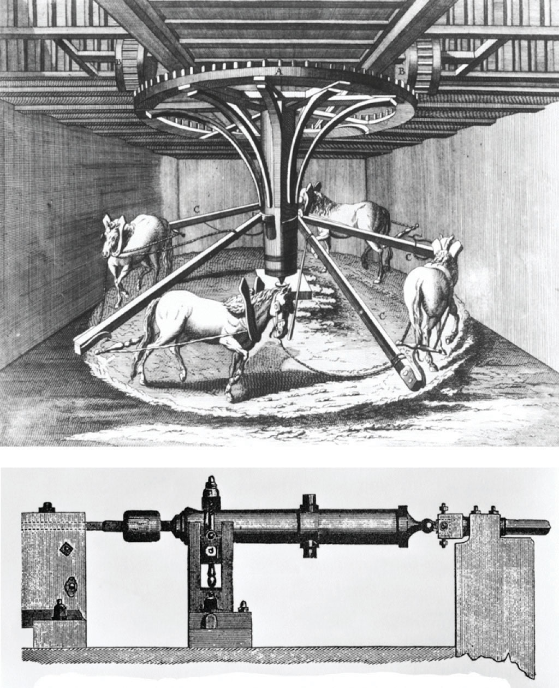
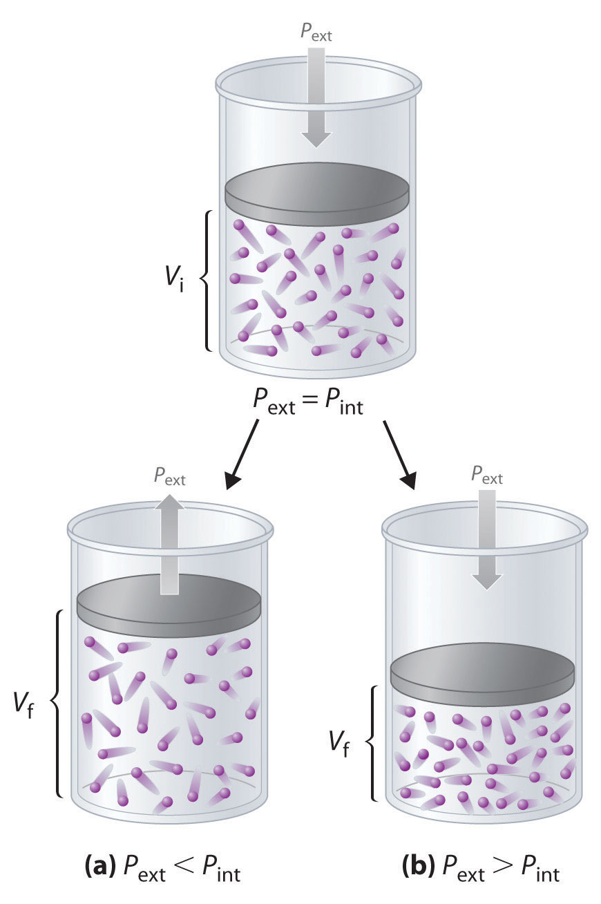
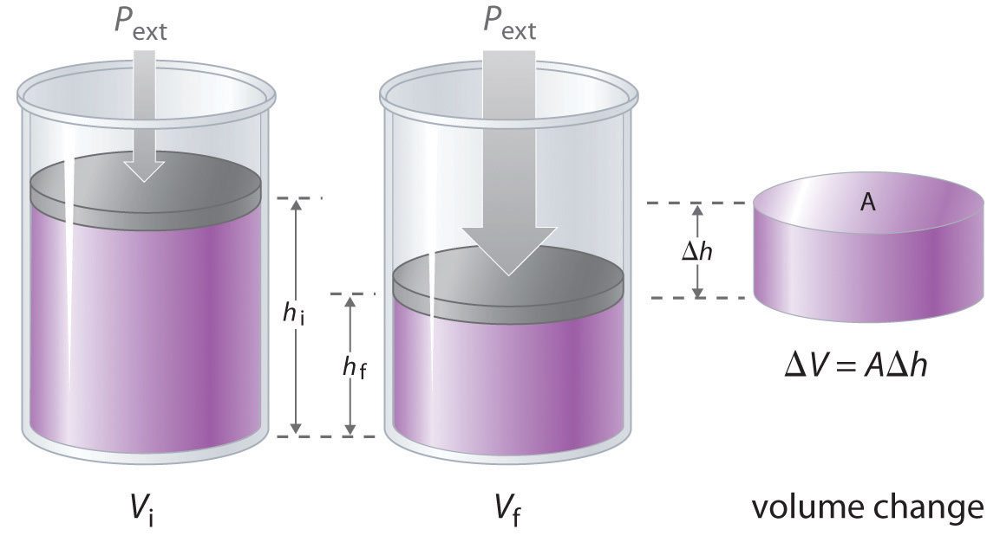
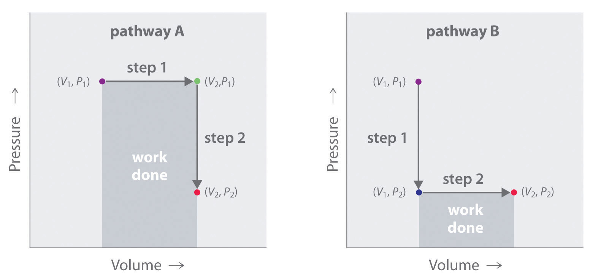

Chemical reactions obey two fundamental laws. The first of these, the law of conservation of mass, states that matter can be neither created nor destroyed. (For more information on matter, see Chapter 1 "Introduction to Chemistry".) The law of conservation of mass is the basis for all the stoichiometry and equilibrium calculations you have learned thus far in chemistry. The second, the law of conservation of energy, states that energy can be neither created nor destroyed. (For more information on energy, see Chapter 5 "Energy Changes in Chemical Reactions".) Instead, energy takes various forms that can be converted from one form to another. For example, the energy stored in chemical bonds can be released as heat during a chemical reaction.
In Chapter 5 "Energy Changes in Chemical Reactions", you also learned about thermochemistry, the study of energy changes that occur during chemical reactions. Our goal in this chapter is to extend the concepts of thermochemistry to an exploration of thermodynamicsThe study of the interrelationships among heat, work, and the energy content of a system at equilibrium. (from the Greek thermo and dynamic, meaning “heat” and “power,” respectively), the study of the interrelationships among heat, work, and the energy content of a system at equilibrium. Thermodynamics tells chemists whether a particular reaction is energetically possible in the direction in which it is written, and it gives the composition of the reaction system at equilibrium. It does not, however, say anything about whether an energetically feasible reaction will actually occur as written, and it tells us nothing about the reaction rate or the pathway by which it will occur. The rate of a reaction and its pathway are described by chemical kinetics. (For more information on reaction rates and kinetics, see Chapter 14 "Chemical Kinetics".)
The melting of ice is a thermodynamic process. When a cube of ice melts, there is a spontaneous and irreversible transfer of heat from a warm substance, the surrounding air, to a cold substance, the ice cube. The direction of heat flow in this process and the resulting increase in entropy illustrate the second law of thermodynamics.
Chemical thermodynamics provides a bridge between the macroscopic properties of a substance and the individual properties of its constituent molecules and atoms. As you will see, thermodynamics explains why graphite can be converted to diamond; how chemical energy stored in molecules can be used to perform work; and why certain processes, such as iron rusting and organisms aging and dying, proceed spontaneously in only one direction, requiring no net input of energy to occur.
We begin our discussion of thermodynamics by reviewing some important terms introduced in Chapter 5 "Energy Changes in Chemical Reactions". First, we need to distinguish between a system and its surroundings. A system is that part of the universe in which we are interested, such as a mixture of gases in a glass bulb or a solution of substances in a flask. The surroundings are everything else—the rest of the universe. We can therefore state the following:
Equation 18.1
system + surroundings = universeA closed system, such as the contents of a sealed jar, cannot exchange matter with its surroundings, whereas an open system can; in this case, we can convert a closed system (the jar) to an open system by removing the jar’s lid.
In Chapter 5 "Energy Changes in Chemical Reactions", we also introduced the concept of a state functionA property of a system whose magnitude depends on only the present state of the system, not its previous history., a property of a system that depends on only the present state of the system, not its history. Thus a change in a state function depends on only the difference between the initial and final states, not the pathway used to go from one to the other. To help understand the concept of a state function, imagine a person hiking up a mountain (Figure 18.1 "Altitude Is a State Function"). If the person is well trained and fit, he or she may be able to climb almost vertically to the top (path A), whereas another less athletic person may choose a path that winds gradually to the top (path B). If both hikers start from the same point at the base of the mountain and end up at the same point at the top, their net change in altitude will be the same regardless of the path chosen. Hence altitude is a state function. On the other hand, a person may or may not carry a heavy pack and may climb in hot weather or cold. These conditions would influence changes in the hiker’s fatigue level, which depends on the path taken and the conditions experienced. Fatigue, therefore, is not a state function. Thermodynamics is generally concerned with state functions and does not deal with how the change between the initial state and final state occurs.
Figure 18.1 Altitude Is a State Function
When hiking up a mountain, a person may decide to take path A, which is almost vertical, or path B, which gradually winds up to the top. Regardless of the path taken, the net change in altitude going from the initial state (bottom of the climb) to the final state (top of the climb) is the same. Thus altitude is a state function.
The internal energy (E)A state function that is the sum of the kinetic and potential energies of all a system’s components. of a system is the sum of the potential energy and the kinetic energy of all the components; internal energy is a state function. Although a closed system cannot exchange matter with its surroundings, it can exchange energy with its surroundings in two ways: by doing work or by releasing or absorbing heat—the flow of thermal energy. Work and heat are therefore two distinct ways of changing the internal energy of a system. We defined work (w) in Chapter 5 "Energy Changes in Chemical Reactions" as a force F acting through a distance d:
Equation 18.2
w = FdBecause work occurs only when an object, such as a person, or a substance, such as water, moves against an opposing force, work requires that a system and its surroundings be connected. In contrast, the flow of heat, the transfer of energy due to differences in temperature between two objects, represents a thermal connection between a system and its surroundings. Thus doing work causes a physical displacement, whereas the flow of heat causes a temperature change. The units of work and heat must be the same because both processes result in the transfer of energy. In the SI system, those units are joules (J), the same unit used for energy. There is no difference between an energy change brought about by doing work on a system and an equal energy change brought about by heating it.
The connections among work, heat, and energy were first described by Benjamin Thompson (1753–1814), an American-born scientist who was also known as Count Rumford. While supervising the manufacture of cannons, Rumford recognized the relationship between the amount of work required to drill out a cannon and the temperature of the water used to cool it during the drilling process (Figure 18.2 "The Relationship between Heat and Work"). At that time, it was generally thought that heat and work were separate and unrelated phenomena. Hence Rumford’s ideas were not widely accepted until many years later, after his findings had been corroborated in other laboratories.
Figure 18.2 The Relationship between Heat and Work
In the 1780s, an American scientist named Benjamin Thompson, also known as Count Rumford, was hired by the Elector of Bavaria to supervise the manufacture of cannons. During the manufacturing process, teams of horses harnessed to a large-toothed wheel supplied the power needed to drill a hole several inches in diameter straight down the center of a solid brass or bronze cylinder, which was cooled by water. Based on his observations, Rumford became convinced that heat and work are equivalent ways of transferring energy.
As we saw in Chapter 5 "Energy Changes in Chemical Reactions", there are many kinds of work, including mechanical work, electrical work, and work against a gravitational or a magnetic field. Here we will consider only mechanical work, focusing on the work done during changes in the pressure or the volume of a gas. To describe this pressure–volume work (PV work), we will use such imaginary oddities as frictionless pistons, which involve no component of resistance, and ideal gases, which have no attractive or repulsive interactions.
Imagine, for example, an ideal gas, confined by a frictionless piston, with internal pressure Pint and initial volume Vi (Figure 18.3). If Pext = Pint, the system is at equilibrium; the piston does not move, and no work is done. If the external pressure on the piston (Pext) is less than Pint, however, then the ideal gas inside the piston will expand, forcing the piston to perform work on its surroundings; that is, the final volume (Vf) will be greater than Vi. If Pext > Pint, then the gas will be compressed, and the surroundings will perform work on the system.
If the piston has cross-sectional area A, the external pressure exerted by the piston is, by definition, the force per unit area: Pext = F/A. The volume of any three-dimensional object with parallel sides (such as a cylinder) is the cross-sectional area times the height (V = Ah). Rearranging to give F = PextA and defining the distance the piston moves (d) as Δh, we can calculate the magnitude of the work performed by the piston by substituting into Equation 18.2:
Equation 18.3
w = Fd = PextAΔhFigure 18.3 PV Work
Using a frictionless piston, if the external pressure is less than Pint (a), the ideal gas inside the piston will expand, forcing the piston to perform work on its surroundings. The final volume (Vf) will be greater than Vi. Alternatively, if the external pressure is greater than Pint (b), the gas will be compressed, and the surroundings will perform work on the system.
The change in the volume of the cylinder (ΔV) as the piston moves a distance d is ΔV = AΔh, as shown in Figure 18.4 "Work Performed with a Change in Volume". The work performed is thus
Equation 18.4
w = PextΔVThe units of work obtained using this definition are correct for energy: pressure is force per unit area (newton/m2) and volume has units of cubic meters, so
Figure 18.4 Work Performed with a Change in Volume
The change in the volume (ΔV) of the cylinder housing a piston is ΔV = AΔh as the piston moves. The work performed by the surroundings on the system as the piston moves inward is given by w = PextΔV.
If we use atmospheres for P and liters for V, we obtain units of L·atm for work. These units correspond to units of energy, as shown in the different values of the ideal gas constant R:
Thus 0.08206 L·atm = 8.314 J and 1 L·atm = 101.3 J. (For more information on the ideal gas law, see Chapter 10 "Gases".)
Whether work is defined as having a positive sign or a negative sign is a matter of convention. In Chapter 5 "Energy Changes in Chemical Reactions", we defined heat flow from a system to its surroundings as negative. Using that same sign convention, we define work done by a system on its surroundings as having a negative sign because it results in a transfer of energy from a system to its surroundings.This is an arbitrary convention and one that is not universally used. Some engineering disciplines are more interested in the work done on the surroundings than in the work done by the system and therefore use the opposite convention. Because ΔV > 0 for an expansion, Equation 18.4 must be written with a negative sign to describe PV work done by the system as negative:
Equation 18.5
w = −PextΔVThe work done by a gas expanding against an external pressure is therefore negative, corresponding to work done by a system on its surroundings. Conversely, when a gas is compressed by an external pressure, ΔV < 0 and the work is positive because work is being done on a system by its surroundings.
Suppose, for example, that the system under study is a mass of steam heated by the combustion of several hundred pounds of coal and enclosed within a cylinder housing a piston attached to the crankshaft of a large steam engine. The gas is not ideal, and the cylinder is not frictionless. Nonetheless, as steam enters the engine chamber and the expanding gas pushes against the piston, the piston moves, so useful work is performed. In fact, PV work launched the Industrial Revolution of the 19th century and powers the internal combustion engine on which most of us still rely for transportation.
In contrast to internal energy, work is not a state function. We can see this by examining Figure 18.5 "Work Is Not a State Function", in which two different, two-step pathways take a gaseous system from an initial state to a final state with corresponding changes in temperature. In pathway A, the volume of a gas is initially increased while its pressure stays constant (step 1); then its pressure is decreased while the volume remains constant (step 2). In pathway B, the order of the steps is reversed. The temperatures, pressures, and volumes of the initial and final states are identical in both cases, but the amount of work done, indicated by the shaded areas in the figure, is substantially different. As we can see, the amount of work done depends on the pathway taken from (V1, P1) to (V2, P2), which means that work is not a state function.
Internal energy is a state function, whereas work is not.
Figure 18.5 Work Is Not a State Function
In pathway A, the volume of a gas is initially increased while its pressure stays constant (step 1). Its pressure is then decreased while the volume remains constant (step 2). Pathway B reverses these steps. Although (V1, P1) and (V2, P2) are identical in both cases, the amount of work done (shaded area) depends on the pathway taken.
A small high-performance internal combustion engine has six cylinders with a total nominal displacement (volume) of 2.40 L and a 10:1 compression ratio (meaning that the volume of each cylinder decreases by a factor of 10 when the piston compresses the air–gas mixture inside the cylinder prior to ignition). How much work in joules is done when a gas in one cylinder of the engine expands at constant temperature against an opposing pressure of 40.0 atm during the engine cycle? Assume that the gas is ideal, the piston is frictionless, and no energy is lost as heat.
Given: final volume, compression ratio, and external pressure
Asked for: work done
Strategy:
A Calculate the final volume of gas in a single cylinder. Then compute the initial volume of gas in a single cylinder from the compression ratio.
B Use Equation 18.5 to calculate the work done in liter-atmospheres. Convert from liter-atmospheres to joules.
Solution:
A To calculate the work done, we need to know the initial and final volumes. The final volume is the volume of one of the six cylinders with the piston all the way down: Vf = 2.40 L/6 = 0.400 L. With a 10:1 compression ratio, the volume of the same cylinder with the piston all the way up is Vi = 0.400 L/10 = 0.0400 L. Work is done by the system on its surroundings, so work is negative.
w = −PextΔV = −(40.0 atm)(0.400 L − 0.0400 L) = −14.4 L·atmConverting from liter-atmospheres to joules,
In the following exercise, you will see that the concept of work is not confined to engines and pistons. It is found in other applications as well.
Exercise
Breathing requires work, even if you are unaware of it. The lung volume of a 70 kg man at rest changed from 2200 mL to 2700 mL when he inhaled, while his lungs maintained a pressure of approximately 1.0 atm. How much work in liter-atmospheres and joules was required to take a single breath? During exercise, his lung volume changed from 2200 mL to 5200 mL on each in-breath. How much additional work in joules did he require to take a breath while exercising?
Answer: −0.500 L·atm, or −50.7 J; −304 J; if he takes a breath every three seconds, this corresponds to 1.4 Calories per minute (1.4 kcal).
Thermodynamics is the study of the interrelationships among heat, work, and the energy content of a system at equilibrium. The sum of the potential energy and the kinetic energy of all the components of a system is the internal energy (E) of the system, which is a state function. When the pressure or the volume of a gas is changed, any mechanical work done is called PV work. Work done by a system on its surroundings is given a negative value, whereas work done on a system by its surroundings has a positive value.
Thermodynamics focuses on the energetics of the reactants and products and provides information about the composition of the reaction system at equilibrium. What information on reaction systems is not provided by thermodynamics?
Given a system in which a substance can produce either of two possible products, A → B or A → C, which of the following can be predicted using chemical thermodynamics?
In what two ways can a closed system exchange energy with its surroundings? Are these two processes path dependent or path independent?
A microwave oven operates by providing enough energy to rotate water molecules, which produces heat. Can the change in the internal energy of a cup of water heated in a microwave oven be described as a state function? Can the heat produced be described as a state function?
Thermodynamics tells us nothing about the rate at which reactants are converted to products.
heat and work; path dependent
Calculate the work done in joules in each process.
How much work in joules is done when oxygen is compressed from a volume of 22.8 L and an external pressure of 1.20 atm to 12.0 L at a constant temperature? Was work done by the system or the surroundings?
Champagne is bottled at a CO2 pressure of about 5 atm. What is the force on the cork if its cross-sectional area is 2.0 cm2? How much work is done if a 2.0 g cork flies a distance of 8.2 ft straight into the air when the cork is popped? Was work done by the system or the surroundings?
One mole of water is converted to steam at 1.00 atm pressure and 100°C. Assuming ideal behavior, what is the change in volume when the water is converted from a liquid to a gas? If this transformation took place in a cylinder with a piston, how much work could be done by vaporizing the water at 1.00 atm? Is work done by the system or the surroundings?
Acceleration due to gravity on the earth’s surface is 9.8 m/s2. How much work is done by a 175 lb person going over Niagara Falls (approximately 520 ft high) in a barrel that weighs 145 lb?
Recall that force can be expressed as mass times acceleration (F = ma). Acceleration due to gravity on the earth’s surface is 9.8 m/s2.
A gas is allowed to expand from a volume of 2.3 L to a volume of 5.8 L. During the process, 460 J of heat is transferred from the surroundings to the gas.
One mole of an ideal gas is allowed to expand from an initial volume of 0.62 L to a final volume of 1.00 L at constant temperature against a constant external pressure of 1.0 atm. How much work has been done?
−230 kJ
The relationship between the energy change of a system and that of its surroundings is given by the first law of thermodynamicsThe energy of the universe is constant: = + = 0., which states that the energy of the universe is constant. Using Equation 18.1, we can express this law mathematically as follows:
Equation 18.6
where the subscripts univ, sys, and surr refer to the universe, the system, and the surroundings, respectively. Thus the change in energy of a system is identical in magnitude but opposite in sign to the change in energy of its surroundings.
An important factor that determines the outcome of a chemical reaction is the tendency of all systems, chemical or otherwise, to move toward the lowest possible overall energy state. As a brick dropped from a rooftop falls, its potential energy is converted to kinetic energy; when it reaches ground level, it has achieved a state of lower potential energy. Anyone nearby will notice that energy is transferred to the surroundings as the noise of the impact reverberates and the dust rises when the brick hits the ground. Similarly, if a spark ignites a mixture of isooctane and oxygen in an internal combustion engine, carbon dioxide and water form spontaneously, while potential energy (in the form of the relative positions of atoms in the molecules) is released to the surroundings as heat and work. The internal energy content of the CO2/H2O product mixture is less than that of the isooctane/O2 reactant mixture. The two cases differ, however, in the form in which the energy is released to the surroundings. In the case of the falling brick, the energy is transferred as work done on whatever happens to be in the path of the brick; in the case of burning isooctane, the energy can be released as solely heat (if the reaction is carried out in an open container) or as a mixture of heat and work (if the reaction is carried out in the cylinder of an internal combustion engine). Because heat and work are the only two ways in which energy can be transferred between a system and its surroundings, any change in the internal energy of the system is the sum of the heat transferred (q) and the work done (w):
Equation 18.7
ΔEsys = q + wAlthough q and w are not state functions on their own, their sum (ΔEsys) is independent of the path taken and is therefore a state function. A major task for the designers of any machine that converts energy to work is to maximize the amount of work obtained and minimize the amount of energy released to the environment as heat. An example is the combustion of coal to produce electricity. Although the maximum amount of energy available from the process is fixed by the energy content of the reactants and the products, the fraction of that energy that can be used to perform useful work is not fixed, as discussed in Section 18.5 "Free Energy". Because we focus almost exclusively on the changes in the energy of a system, we will not use “sys” as a subscript unless we need to distinguish explicitly between a system and its surroundings.
The tendency of all systems, chemical or otherwise, is to move toward the state with the lowest possible energy.
Although q and w are not state functions, their sum (ΔEsys) is independent of the path taken and therefore is a state function.
A sample of an ideal gas in the cylinder of an engine is compressed from 400 mL to 50.0 mL during the compression stroke against a constant pressure of 8.00 atm. At the same time, 140 J of energy is transferred from the gas to the surroundings as heat. What is the total change in the internal energy (ΔE) of the gas in joules?
Given: initial volume, final volume, external pressure, and quantity of energy transferred as heat
Asked for: total change in internal energy
Strategy:
A Determine the sign of q to use in Equation 18.7.
B From Equation 18.5, calculate w from the values given. Substitute this value into Equation 18.7 to calculate ΔE.
Solution:
A From Equation 18.7, we know that ΔE = q + w. We are given the magnitude of q (140 J) and need only determine its sign. Because energy is transferred from the system (the gas) to the surroundings, q is negative by convention.
B Because the gas is being compressed, we know that work is being done on the system, so w must be positive. From Equation 18.5,
Thus
ΔE = q + w = −140 J + 284 J = 144 JIn this case, although work is done on the gas, increasing its internal energy, heat flows from the system to the surroundings, decreasing its internal energy by 144 J. The work done and the heat transferred can have opposite signs.
Exercise
A sample of an ideal gas is allowed to expand from an initial volume of 0.200 L to a final volume of 3.50 L against a constant external pressure of 0.995 atm. At the same time, 117 J of heat is transferred from the surroundings to the gas. What is the total change in the internal energy (ΔE) of the gas in joules?
Answer: −216 J
By convention, both heat flow and work have a negative sign when energy is transferred from a system to its surroundings and vice versa.
To further understand the relationship between heat flow (q) and the resulting change in internal energy (ΔE), we can look at two sets of limiting conditions: reactions that occur at constant volume and reactions that occur at constant pressure. We will assume that PV work is the only kind of work possible for the system, so we can substitute its definition from Equation 18.5 into Equation 18.7 to obtain the following:
Equation 18.8
ΔE = q − PΔVwhere the subscripts have been deleted.
If the reaction occurs in a closed vessel, the volume of the system is fixed, and ΔV is zero. Under these conditions, the heat flow (often given the symbol qv to indicate constant volume) must equal ΔE:
Equation 18.9
No PV work can be done, and the change in the internal energy of the system is equal to the amount of heat transferred from the system to the surroundings or vice versa.
Many chemical reactions are not, however, carried out in sealed containers at constant volume but in open containers at a more or less constant pressure of about 1 atm. The heat flow under these conditions is given the symbol qp to indicate constant pressure. Replacing q in Equation 18.8 by qp and rearranging to solve for qp,
Equation 18.10
Thus, at constant pressure, the heat flow for any process is equal to the change in the internal energy of the system plus the PV work done, as we stated in Chapter 5 "Energy Changes in Chemical Reactions".
Because conditions of constant pressure are so important in chemistry, a new state function called enthalpy (H)A state function that is the sum of the system’s internal energy and the product of its pressure and volume is defined as H = E + PV. At constant pressure, the change in the enthalpy of a system is as follows:
Equation 18.11
ΔH = ΔE + Δ(PV) = ΔE + PΔVComparing the previous two equations shows that at constant pressure, the change in the enthalpy of a system is equal to the heat flow: ΔH = qp. This expression is consistent with our definition of enthalpy in Chapter 5 "Energy Changes in Chemical Reactions", where we stated that enthalpy is the heat absorbed or produced during any process that occurs at constant pressure.
At constant pressure, the change in the enthalpy of a system is equal to the heat flow: ΔH = qp.
The molar enthalpy of fusion for ice at 0.0°C and a pressure of 1.00 atm is 6.01 kJ, and the molar volumes of ice and water at 0°C are 0.0197 L and 0.0180 L, respectively. Calculate ΔH and ΔE for the melting of ice at 0.0°C. (For more information on enthalpy, see Chapter 5 "Energy Changes in Chemical Reactions", Section 5.2 "Enthalpy".)
Given: enthalpy of fusion for ice, pressure, and molar volumes of ice and water
Asked for: ΔH and ΔE for ice melting at 0.0°C
Strategy:
A Determine the sign of q and set this value equal to ΔH.
B Calculate Δ(PV) from the information given.
C Determine ΔE by substituting the calculated values into Equation 18.11.
Solution:
A Because 6.01 kJ of heat is absorbed from the surroundings when 1 mol of ice melts, q = +6.01 kJ. When the process is carried out at constant pressure, q = qp = ΔH = 6.01 kJ.
B To find ΔE using Equation 18.11, we need to calculate Δ(PV). The process is carried out at a constant pressure of 1.00 atm, so
C Substituting the calculated values of ΔH and PΔV into Equation 18.11,
ΔE = ΔH − PΔV = 6010 J − (−0.0017 J) = 6010 J = 6.01 kJExercise
At 298 K and 1 atm, the conversion of graphite to diamond requires the input of 1.850 kJ of heat per mole of carbon. The molar volumes of graphite and diamond are 0.00534 L and 0.00342 L, respectively. Calculate ΔH and ΔE for the conversion of C (graphite) to C (diamond) under these conditions.
Answer: ΔH = 1.85 kJ/mol; ΔE = 1.85 kJ/mol
If ΔH for a reaction is known, we can use the change in the enthalpy of the system (Equation 18.11) to calculate its change in internal energy. When a reaction involves only solids, liquids, liquid solutions, or any combination of these, the volume does not change appreciably (ΔV = 0). Under these conditions, we can simplify Equation 18.11 to ΔH = ΔE. If gases are involved, however, ΔH and ΔE can differ significantly. We can calculate ΔE from the measured value of ΔH by using the right side of Equation 18.11 together with the ideal gas law, PV = nRT. Recognizing that Δ(PV) = Δ(nRT), we can rewrite Equation 18.11 as follows:
Equation 18.12
ΔH = ΔE + Δ(PV) = ΔE + Δ(nRT)At constant temperature, Δ(nRT) = RTΔn, where Δn is the difference between the final and initial numbers of moles of gas. Thus
Equation 18.13
ΔE = ΔH − RTΔnFor reactions that result in a net production of gas, Δn > 0, so ΔE < ΔH. Conversely, endothermic reactions (ΔH > 0) that result in a net consumption of gas have Δn < 0 and ΔE > ΔH. The relationship between ΔH and ΔE for systems involving gases is illustrated in Example 4.
For reactions that result in a net production of gas, ΔE < ΔH. For endothermic reactions that result in a net consumption of gas, ΔE > ΔH.
The combustion of graphite to produce carbon dioxide is described by the equation C (graphite, s) + O2(g) → CO2(g). At 298 K and 1.0 atm, ΔH = −393.5 kJ/mol of graphite for this reaction, and the molar volume of graphite is 0.0053 L. What is ΔE for the reaction?
Given: balanced chemical equation, temperature, pressure, ΔH, and molar volume of reactant
Asked for: ΔE
Strategy:
A Use the balanced chemical equation to calculate the change in the number of moles of gas during the reaction.
B Substitute this value and the data given into Equation 18.13 to obtain ΔE.
Solution:
A In this reaction, 1 mol of gas (CO2) is produced, and 1 mol of gas (O2) is consumed. Thus Δn = 1 − 1 = 0.
B Substituting this calculated value and the given values into Equation 18.13,
To understand why only the change in the volume of the gases needs to be considered, notice that the molar volume of graphite is only 0.0053 L. A change in the number of moles of gas corresponds to a volume change of 22.4 L/mol of gas at standard temperature and pressure (STP), so the volume of gas consumed or produced in this case is (1)(22.4 L) = 22.4 L, which is much, much greater than the volume of 1 mol of a solid such as graphite.
Exercise
Calculate ΔE for the conversion of oxygen gas to ozone at 298 K: 3O2(g) → 2O3(g). The value of ΔH for the reaction is 285.4 kJ.
Answer: 288 kJ
As the exercise in Example 4 illustrates, the magnitudes of ΔH and ΔE for reactions that involve gases are generally rather similar, even when there is a net production or consumption of gases.
The first law of thermodynamics states that the energy of the universe is constant. The change in the internal energy of a system is the sum of the heat transferred and the work done. At constant pressure, heat flow (q) and internal energy (E) are related to the system’s enthalpy (H). The heat flow is equal to the change in the internal energy of the system plus the PV work done. When the volume of a system is constant, changes in its internal energy can be calculated by substituting the ideal gas law into the equation for ΔE.
Internal energy change
Equation 18.7: ΔEsys = q + w
Enthalpy change
Equation 18.11: ΔH = ΔE + Δ(PV)
Relationship between Δ H and Δ E for an ideal gas
Equation 18.13: ΔE = ΔH − RTΔn
Describe how a swinging pendulum that slows with time illustrates the first law of thermodynamics.
When air is pumped into a bicycle tire, the air is compressed. Assuming that the volume is constant, express the change in internal energy in terms of q and w.
What is the relationship between enthalpy and internal energy for a reaction that occurs at constant pressure?
An intrepid scientist placed an unknown salt in a small amount of water. All the salt dissolved in the water, and the temperature of the solution dropped several degrees.
For years, chemists and physicists focused on enthalpy changes as a way to measure the spontaneity of a reaction. What arguments would you use to convince them not to use this method?
What is the relationship between enthalpy and internal energy for a reaction that occurs at constant volume?
The enthalpy of combustion (ΔHcomb) is defined thermodynamically as the enthalpy change for complete oxidation. The complete oxidation of hydrocarbons is represented by the following general equation: hydrocarbon + O2(g) → CO2(g) + H2O(g). Enthalpies of combustion from reactions like this one can be measured experimentally with a high degree of precision. It has been found that the less stable the reactant, the more heat is evolved, so the more negative the value of ΔHcomb. In each pair of hydrocarbons, which member do you expect to have the greater (more negative) heat of combustion? Justify your answers.
Using a structural argument, explain why the trans isomer of 2-butene is more stable than the cis isomer. The enthalpies of formation of cis- and trans-2-butene are −7.1 kJ/mol and −11.4 kJ/mol, respectively.
Using structural arguments, explain why cyclopropane has a positive (12.7 kJ/mol), whereas cyclopentane has a negative (−18.4 kJ/mol). (Hint: consider bond angles.)
At constant pressure, ΔH = ΔE + PΔV.
With bond angles of 60°, cyclopropane is highly strained, causing it to be less stable than cyclopentane, which has nearly ideal tetrahedral geometry at each carbon atom.
A block of CO2 weighing 15 g evaporates in a 5.0 L container at 25°C. How much work has been done if the gas is allowed to expand against an external pressure of 0.98 atm under isothermal conditions? The enthalpy of sublimation of CO2 is 25.1 kJ/mol. What is the change in internal energy (kJ/mol) for the sublimation of CO2 under these conditions?
Zinc and HCl react according to the following equation:
Zn(s) + 2HCl(aq) → Zn2+(aq) + 2Cl−(aq) + H2(g)When 3.00 g of zinc metal is added to a dilute HCl solution at 1.00 atm and 25°C, and this reaction is allowed to go to completion at constant pressure, 6.99 kJ of heat must be removed to return the final solution to its original temperature. What are the values of q and w, and what is the change in internal energy?
Acetylene torches, used industrially to cut and weld metals, reach flame temperatures as high as 3000°C. The combustion reaction is as follows:
Calculate the amount of work done against a pressure of 1.0 atm when 4.0 mol of acetylene are allowed to react with 10 mol of O2 at 1.0 atm at 20°C. What is the change in internal energy for the reaction?
When iron dissolves in 1.00 M aqueous HCl, the products are FeCl2(aq) and hydrogen gas. Calculate the work done if 30 g of Fe react with excess hydrochloric acid in a closed vessel at 20°C. How much work is done if the reaction takes place in an open vessel with an external pressure of 1.0 atm?
−350 J; 8.2 kJ
The first law of thermodynamics governs changes in the state function we have called internal energy (E). According to Section 18.2 "The First Law of Thermodynamics", changes in the internal energy (ΔE) are closely related to changes in the enthalpy (ΔH), which is a measure of the heat flow between a system and its surroundings at constant pressure. You also learned in Chapter 5 "Energy Changes in Chemical Reactions" that the enthalpy change for a chemical reaction can be calculated using tabulated values of enthalpies of formation. This information, however, does not tell us whether a particular process or reaction will occur spontaneously.
Let’s consider a familiar example of spontaneous change. If a hot frying pan that has just been removed from the stove is allowed to come into contact with a cooler object, such as cold water in a sink, heat will flow from the hotter object to the cooler one, in this case usually releasing steam. Eventually both objects will reach the same temperature, at a value between the initial temperatures of the two objects. This transfer of heat from a hot object to a cooler one obeys the first law of thermodynamics: energy is conserved.
Now consider the same process in reverse. Suppose that a hot frying pan in a sink of cold water were to become hotter while the water became cooler. As long as the same amount of thermal energy was gained by the frying pan and lost by the water, the first law of thermodynamics would be satisfied. Yet we all know that such a process cannot occur: heat always flows from a hot object to a cold one, never in the reverse direction. That is, by itself the magnitude of the heat flow associated with a process does not predict whether the process will occur spontaneously.
For many years, chemists and physicists tried to identify a single measurable quantity that would enable them to predict whether a particular process or reaction would occur spontaneously. Initially, many of them focused on enthalpy changes and hypothesized that an exothermic process would always be spontaneous. But although it is true that many, if not most, spontaneous processes are exothermic, there are also many spontaneous processes that are not exothermic. For example, at a pressure of 1 atm, ice melts spontaneously at temperatures greater than 0°C, yet this is an endothermic process because heat is absorbed. Similarly, many salts (such as NH4NO3, NaCl, and KBr) dissolve spontaneously in water even though they absorb heat from the surroundings as they dissolve (i.e., ΔHsoln > 0). Reactions can also be both spontaneous and highly endothermic, like the reaction of barium hydroxide with ammonium thiocyanate shown in Figure 18.6 "An Endothermic Reaction".
Figure 18.6 An Endothermic Reaction

The reaction of barium hydroxide with ammonium thiocyanate is spontaneous but highly endothermic, so water, one product of the reaction, quickly freezes into slush. When water is placed on a block of wood under the flask, the highly endothermic reaction that takes place in the flask freezes water that has been placed under the beaker, so the flask becomes frozen to the wood.
Thus enthalpy is not the only factor that determines whether a process is spontaneous. For example, after a cube of sugar has dissolved in a glass of water so that the sucrose molecules are uniformly dispersed in a dilute solution, they never spontaneously come back together in solution to form a sugar cube. Moreover, the molecules of a gas remain evenly distributed throughout the entire volume of a glass bulb and never spontaneously assemble in only one portion of the available volume. To help explain why these phenomena proceed spontaneously in only one direction requires an additional state function called entropy (S)The degree of disorder in a thermodynamic system, which is directly proportional to the possible number of microstates., a thermodynamic property of all substances that is proportional to their degree of disorder. In Chapter 13 "Solutions", we introduced the concept of entropy in relation to solution formation. Here we further explore the nature of this state function and define it mathematically.
Chemical and physical changes in a system may be accompanied by either an increase or a decrease in the disorder of the system, corresponding to an increase in entropy (ΔS > 0) or a decrease in entropy (ΔS < 0), respectively. As with any other state function, the change in entropy is defined as the difference between the entropies of the final and initial states: ΔS = Sf − Si.
When a gas expands into a vacuum, its entropy increases because the increased volume allows for greater atomic or molecular disorder. The greater the number of atoms or molecules in the gas, the greater the disorder. The magnitude of the entropy of a system depends on the number of microscopic states, or microstates, associated with it (in this case, the number of atoms or molecules); that is, the greater the number of microstates, the greater the entropy.
We can illustrate the concepts of microstates and entropy using a deck of playing cards, as shown in Figure 18.7 "Illustrating Low- and High-Entropy States with a Deck of Playing Cards". In any new deck, the 52 cards are arranged by four suits, with each suit arranged in descending order. If the cards are shuffled, however, there are approximately 1068 different ways they might be arranged, which corresponds to 1068 different microscopic states. The entropy of an ordered new deck of cards is therefore low, whereas the entropy of a randomly shuffled deck is high. Card games assign a higher value to a hand that has a low degree of disorder. In games such as five-card poker, only 4 of the 2,598,960 different possible hands, or microstates, contain the highly ordered and valued arrangement of cards called a royal flush, almost 1.1 million hands contain one pair, and more than 1.3 million hands are completely disordered and therefore have no value. Because the last two arrangements are far more probable than the first, the value of a poker hand is inversely proportional to its entropy.
Figure 18.7 Illustrating Low- and High-Entropy States with a Deck of Playing Cards

An new, unshuffled deck (top) has only a single arrangement, so there is only one microstate. In contrast, a randomly shuffled deck (bottom) can have any one of approximately 1068 different arrangements, which correspond to 1068 different microstates.
We can see how to calculate these kinds of probabilities for a chemical system by considering the possible arrangements of a sample of four gas molecules in a two-bulb container (Figure 18.8 "The Possible Microstates for a Sample of Four Gas Molecules in Two Bulbs of Equal Volume"). There are five possible arrangements: all four molecules in the left bulb (I); three molecules in the left bulb and one in the right bulb (II); two molecules in each bulb (III); one molecule in the left bulb and three molecules in the right bulb (IV); and four molecules in the right bulb (V). If we assign a different color to each molecule to keep track of it for this discussion (remember, however, that in reality the molecules are indistinguishable from one another), we can see that there are 16 different ways the four molecules can be distributed in the bulbs, each corresponding to a particular microstate. As shown in Figure 18.8 "The Possible Microstates for a Sample of Four Gas Molecules in Two Bulbs of Equal Volume", arrangement I is associated with a single microstate, as is arrangement V, so each arrangement has a probability of 1/16. Arrangements II and IV each have a probability of 4/16 because each can exist in four microstates. Similarly, six different microstates can occur as arrangement III, making the probability of this arrangement 6/16. Thus the arrangement that we would expect to encounter, with half the gas molecules in each bulb, is the most probable arrangement. The others are not impossible but simply less likely.
Figure 18.8 The Possible Microstates for a Sample of Four Gas Molecules in Two Bulbs of Equal Volume

There are 16 different ways to distribute four gas molecules between the bulbs, with each distribution corresponding to a particular microstate. Arrangements I and V each produce a single microstate with a probability of 1/16. This particular arrangement is so improbable that it is likely not observed. Arrangements II and IV each produce four microstates, with a probability of 4/16. Arrangement III, with half the gas molecules in each bulb, has a probability of 6/16. It is the one encompassing the most microstates, so it is the most probable.
Instead of four molecules of gas, let’s now consider 1 L of an ideal gas at standard temperature and pressure (STP), which contains 2.69 × 1022 molecules (6.022 × 1023 molecules/22.4 L). If we allow the sample of gas to expand into a second 1 L container, the probability of finding all 2.69 × 1022 molecules in one container and none in the other at any given time is extremely small, approximately The probability of such an occurrence is effectively zero. Although nothing prevents the molecules in the gas sample from occupying only one of the two bulbs, that particular arrangement is so improbable that it is never actually observed. The probability of arrangements with essentially equal numbers of molecules in each bulb is quite high, however, because there are many equivalent microstates in which the molecules are distributed equally. Hence a macroscopic sample of a gas occupies all of the space available to it, simply because this is the most probable arrangement.
A disordered system has a greater number of possible microstates than does an ordered system, so it has a higher entropy. This is most clearly seen in the entropy changes that accompany phase transitions, such as solid to liquid or liquid to gas. As you know from Chapter 11 "Liquids", Chapter 12 "Solids", and Chapter 13 "Solutions", a crystalline solid is composed of an ordered array of molecules, ions, or atoms that occupy fixed positions in a lattice, whereas the molecules in a liquid are free to move and tumble within the volume of the liquid; molecules in a gas have even more freedom to move than those in a liquid. Each degree of motion increases the number of available microstates, resulting in a higher entropy. Thus the entropy of a system must increase during melting (ΔSfus > 0). Similarly, when a liquid is converted to a vapor, the greater freedom of motion of the molecules in the gas phase means that ΔSvap > 0. Conversely, the reverse processes (condensing a vapor to form a liquid or freezing a liquid to form a solid) must be accompanied by a decrease in the entropy of the system: ΔS < 0.
Entropy (S) is a thermodynamic property of all substances that is proportional to their degree of disorder. The greater the number of possible microstates for a system, the greater the disorder and the higher the entropy.
Experiments show that the magnitude of ΔSvap is 80–90 J/(mol·K) for a wide variety of liquids with different boiling points. However, liquids that have highly ordered structures due to hydrogen bonding or other intermolecular interactions tend to have significantly higher values of ΔSvap. For instance, ΔSvap for water is 102 J/(mol·K). Another process that is accompanied by entropy changes is the formation of a solution. As illustrated in Figure 18.9 "The Effect of Solution Formation on Entropy", the formation of a liquid solution from a crystalline solid (the solute) and a liquid solvent is expected to result in an increase in the number of available microstates of the system and hence its entropy. Indeed, dissolving a substance such as NaCl in water disrupts both the ordered crystal lattice of NaCl and the ordered hydrogen-bonded structure of water, leading to an increase in the entropy of the system. At the same time, however, each dissolved Na+ ion becomes hydrated by an ordered arrangement of at least six water molecules, and the Cl− ions also cause the water to adopt a particular local structure. Both of these effects increase the order of the system, leading to a decrease in entropy. The overall entropy change for the formation of a solution therefore depends on the relative magnitudes of these opposing factors. In the case of an NaCl solution, disruption of the crystalline NaCl structure and the hydrogen-bonded interactions in water is quantitatively more important, so ΔSsoln > 0.
Figure 18.9 The Effect of Solution Formation on Entropy

Dissolving NaCl in water results in an increase in the entropy of the system. Each hydrated ion, however, forms an ordered arrangement with water molecules, which decreases the entropy of the system. The magnitude of the increase is greater than the magnitude of the decrease, so the overall entropy change for the formation of an NaCl solution is positive.
Predict which substance in each pair has the higher entropy and justify your answer.
Given: amounts of substances and temperature
Asked for: higher entropy
Strategy:
From the number of atoms present and the phase of each substance, predict which has the greater number of available microstates and hence the higher entropy.
Solution:
Exercise
Predict which substance in each pair has the higher entropy and justify your answer.
Answer:
Changes in entropy (ΔS), together with changes in enthalpy (ΔH), enable us to predict in which direction a chemical or physical change will occur spontaneously. Before discussing how to do so, however, we must understand the difference between a reversible process and an irreversible one. In a reversible processA process in which every intermediate state between the extremes is an equilibrium state, regardless of the direction of the change., every intermediate state between the extremes is an equilibrium state, regardless of the direction of the change. In contrast, an irreversible processA process in which the intermediate states between the extremes are not equilibrium states, so change occurs spontaneously in only one direction. is one in which the intermediate states are not equilibrium states, so change occurs spontaneously in only one direction. As a result, a reversible process can change direction at any time, whereas an irreversible process cannot. When a gas expands reversibly against an external pressure such as a piston, for example, the expansion can be reversed at any time by reversing the motion of the piston; once the gas is compressed, it can be allowed to expand again, and the process can continue indefinitely. In contrast, the expansion of a gas into a vacuum (Pext = 0) is irreversible because the external pressure is measurably less than the internal pressure of the gas. No equilibrium states exist, and the gas expands irreversibly. When gas escapes from a microscopic hole in a balloon into a vacuum, for example, the process is irreversible; the direction of airflow cannot change.
Because work done during the expansion of a gas depends on the opposing external pressure (w = PextΔV), work done in a reversible process is always equal to or greater than work done in a corresponding irreversible process: wrev ≥ wirrev. Whether a process is reversible or irreversible, ΔE = q + w. Because E is a state function, the magnitude of ΔE does not depend on reversibility and is independent of the path taken. So
Equation 18.14
ΔE = qrev + wrev = qirrev + wirrevWork done in a reversible process is always equal to or greater than work done in a corresponding irreversible process: wrev ≥ wirrev.
In other words, ΔE for a process is the same whether that process is carried out in a reversible manner or an irreversible one. We now return to our earlier definition of entropy, using the magnitude of the heat flow for a reversible process (qrev) to define entropy quantitatively.
Because the quantity of heat transferred (qrev) is directly proportional to the absolute temperature of an object (T) (qrev ∝ T), the hotter the object, the greater the amount of heat transferred. Moreover, adding heat to a system increases the kinetic energy of the component atoms and molecules and hence their disorder (ΔS ∝ qrev). Combining these relationships for any reversible process,
Equation 18.15
Because the numerator (qrev) is expressed in units of energy (joules), the units of ΔS are joules/kelvin (J/K). Recognizing that the work done in a reversible process at constant pressure is wrev = −PΔV, we can express Equation 18.14 as follows:
Equation 18.16
ΔE = qrev + wrev = TΔS − PΔVThus the change in the internal energy of the system is related to the change in entropy, the absolute temperature, and the PV work done.
To illustrate the use of Equation 18.15 and Equation 18.16, we consider two reversible processes before turning to an irreversible process. When a sample of an ideal gas is allowed to expand reversibly at constant temperature, heat must be added to the gas during expansion to keep its T constant (Figure 18.10 "Expansion of Gas at Constant Temperature"). The internal energy of the gas does not change because the temperature of the gas does not change; that is, ΔE = 0 and qrev = −wrev. During expansion, ΔV > 0, so the gas performs work on its surroundings: wrev = −PΔV < 0. According to Equation 18.16, this means that qrev must increase during expansion; that is, the gas must absorb heat from the surroundings during expansion, and the surroundings must give up that same amount of heat. The entropy change of the system is therefore ΔSsys = +qrev/T, and the entropy change of the surroundings is ΔSsurr = −qrev/T. The corresponding change in entropy of the universe is then as follows:
Equation 18.17
Thus no change in ΔSuniv has occurred.
Figure 18.10 Expansion of Gas at Constant Temperature

In the initial state (top), the temperatures of a gas and the surroundings are the same. During the reversible expansion of the gas, heat must be added to the gas to maintain a constant temperature. Thus the internal energy of the gas does not change, but work is performed on the surroundings. In the final state (bottom), the temperature of the surroundings is lower because the gas has absorbed heat from the surroundings during expansion.
Now consider the reversible melting of a sample of ice at 0°C and 1 atm. The enthalpy of fusion of ice is 6.01 kJ/mol, which means that 6.01 kJ of heat are absorbed reversibly from the surroundings when 1 mol of ice melts at 0°C, as illustrated in Figure 18.11 "Thermograms Showing That Heat Is Absorbed from the Surroundings When Ice Melts at 0°C". The surroundings constitute a sample of low-density carbon foam that is thermally conductive, and the system is the ice cube that has been placed on it. The direction of heat flow along the resulting temperature gradient is indicated with an arrow. From Equation 18.15, we see that the entropy of fusion of ice can be written as follows:
Equation 18.18
Figure 18.11 Thermograms Showing That Heat Is Absorbed from the Surroundings When Ice Melts at 0°C

By convention, a thermogram shows cold regions in blue, warm regions in red, and thermally intermediate regions in green. When an ice cube (the system, dark blue) is placed on the corner of a square sample of low-density carbon foam with very high thermal conductivity, the temperature of the foam is lowered (going from red to green). As the ice melts, a temperature gradient appears, ranging from warm to very cold. An arrow indicates the direction of heat flow from the surroundings (red and green) to the ice cube. The amount of heat lost by the surroundings is the same as the amount gained by the ice, so the entropy of the universe does not change.
In this case, ΔSfus = (6.01 kJ/mol)/(273 K) = 22.0 J/(mol·K) = ΔSsys. The amount of heat lost by the surroundings is the same as the amount gained by the ice, so ΔSsurr = qrev/T = −(6.01 kJ/mol)/(273 K) = −22.0 J/(mol·K). Once again, we see that the entropy of the universe does not change:
ΔSuniv = ΔSsys + ΔSsurr = 22.0 J/(mol·K) − 22.0 J/(mol·K) = 0In these two examples of reversible processes, the entropy of the universe is unchanged. This is true of all reversible processes and constitutes part of the second law of thermodynamicsThe entropy of the universe remains constant in a reversible process, whereas the entropy of the universe increases in an irreversible (spontaneous) process.: the entropy of the universe remains constant in a reversible process, whereas the entropy of the universe increases in an irreversible (spontaneous) process.
The entropy of the universe increases during a spontaneous process.
As an example of an irreversible process, consider the entropy changes that accompany the spontaneous and irreversible transfer of heat from a hot object to a cold one, as occurs when lava spewed from a volcano flows into cold ocean water. The cold substance, the water, gains heat (q > 0), so the change in the entropy of the water can be written as ΔScold = q/Tcold. Similarly, the hot substance, the lava, loses heat (q < 0), so its entropy change can be written as ΔShot = −q/Thot, where Tcold and Thot are the temperatures of the cold and hot substances, respectively. The total entropy change of the universe accompanying this process is therefore
Equation 18.19
The numerators on the right side of Equation 18.19 are the same in magnitude but opposite in sign. Whether ΔSuniv is positive or negative depends on the relative magnitudes of the denominators. By definition, Thot > Tcold, so −q/Thot must be less than q/Tcold, and ΔSuniv must be positive. As predicted by the second law of thermodynamics, the entropy of the universe increases during this irreversible process. Any process for which ΔSuniv is positive is, by definition, a spontaneous one that will occur as written. Conversely, any process for which ΔSuniv approaches zero will not occur spontaneously as written but will occur spontaneously in the reverse direction. We see, therefore, that heat is spontaneously transferred from a hot substance, the lava, to a cold substance, the ocean water. In fact, if the lava is hot enough (e.g., if it is molten), so much heat can be transferred that the water is converted to steam (Figure 18.12 "Spontaneous Transfer of Heat from a Hot Substance to a Cold Substance").
Figure 18.12 Spontaneous Transfer of Heat from a Hot Substance to a Cold Substance

When molten lava flows into cold ocean water, so much heat is spontaneously transferred to the water that steam is produced.
Tin has two allotropes with different structures. Gray tin (α-tin) has a structure similar to that of diamond, whereas white tin (β-tin) is denser, with a unit cell structure that is based on a rectangular prism. At temperatures greater than 13.2°C, white tin is the more stable phase, but below that temperature, it slowly converts reversibly to the less dense, powdery gray phase. This phenomenon plagued Napoleon’s army during his ill-fated invasion of Russia in 1812: the buttons on his soldiers’ uniforms were made of tin and disintegrated during the Russian winter, adversely affecting the soldiers’ health (and morale). The conversion of white tin to gray tin is exothermic, with ΔH = −2.1 kJ/mol at 13.2°C.
Given: ΔH and temperature
Asked for: ΔS and relative degree of order
Strategy:
Use Equation 18.15 to calculate the change in entropy for the reversible phase transition. From the calculated value of ΔS, predict which allotrope has the more highly ordered structure.
Solution:
We know from Equation 18.15 that the entropy change for any reversible process is the heat transferred (in joules) divided by the temperature at which the process occurs. Because the conversion occurs at constant pressure, and ΔH and ΔE are essentially equal for reactions that involve only solids, we can calculate the change in entropy for the reversible phase transition where qrev = ΔH. Substituting the given values for ΔH and temperature in kelvins (in this case, T = 13.2°C = 286.4 K),
Exercise
Elemental sulfur exists in two forms: an orthorhombic form (Sα), which is stable below 95.3°C, and a monoclinic form (Sβ), which is stable above 95.3°C. The conversion of orthorhombic sulfur to monoclinic sulfur is endothermic, with ΔH = 0.401 kJ/mol at 1 atm.
Answer:
A measure of the disorder of a system is its entropy (S), a state function whose value increases with an increase in the number of available microstates. A reversible process is one for which all intermediate states between extremes are equilibrium states; it can change direction at any time. In contrast, an irreversible process occurs in one direction only. The change in entropy of the system or the surroundings is the quantity of heat transferred divided by the temperature. The second law of thermodynamics states that in a reversible process, the entropy of the universe is constant, whereas in an irreversible process, such as the transfer of heat from a hot object to a cold object, the entropy of the universe increases.
A Russian space vehicle developed a leak, which resulted in an internal pressure drop from 1 atm to 0.85 atm. Is this an example of a reversible expansion? Has work been done?
Which member of each pair do you expect to have a higher entropy? Why?
Determine whether each process is reversible or irreversible.
Determine whether each process is reversible or irreversible.
Explain why increasing the temperature of a gas increases its entropy. What effect does this have on the internal energy of the gas?
For a series of related compounds, does ΔSvap increase or decrease with an increase in the strength of intermolecular interactions in the liquid state? Why?
Is the change in the enthalpy of reaction or the change in entropy of reaction more sensitive to changes in temperature? Explain your reasoning.
Solid potassium chloride has a highly ordered lattice structure. Do you expect ΔSsoln to be greater or less than zero? Why? What opposing factors must be considered in making your prediction?
Aniline (C6H5NH2) is an oily liquid at 25°C that darkens on exposure to air and light. It is used in dying fabrics and in staining wood black. One gram of aniline dissolves in 28.6 mL of water, but aniline is completely miscible with ethanol. Do you expect ΔSsoln in H2O to be greater than, less than, or equal to ΔSsoln in CH3CH2OH? Why?
No, it is irreversible; no work is done because the external pressure is effectively zero.
Water has a highly ordered, hydrogen-bonded structure that must reorganize to accommodate hydrophobic solutes like aniline. In contrast, we expect that aniline will be able to disperse randomly throughout ethanol, which has a significantly less ordered structure. We therefore predict that ΔSsoln in ethanol will be more positive than ΔSsoln in water.
Liquid nitrogen, which has a boiling point of −195.79°C, is used as a coolant and as a preservative for biological tissues. Is the entropy of nitrogen higher or lower at −200°C than at −190°C? Explain your answer. Liquid nitrogen freezes to a white solid at −210.00°C, with an enthalpy of fusion of 0.71 kJ/mol. What is its entropy of fusion? Is freezing biological tissue in liquid nitrogen an example of a reversible process or an irreversible process?
Using the second law of thermodynamics, explain why heat flows from a hot body to a cold body but not from a cold body to a hot body.
One test of the spontaneity of a reaction is whether the entropy of the universe increases: ΔSuniv > 0. Using an entropic argument, show that the following reaction is spontaneous at 25°C:
4Fe(s) + 3O2(g) → 2Fe2O3(s)Why does the entropy of the universe increase in this reaction even though gaseous molecules, which have a high entropy, are consumed?
Calculate the missing data in the following table.
| Compound | ΔHfus (kJ/mol) | ΔSfus [J/(mol·K)] | Melting Point (°C) |
|---|---|---|---|
| acetic acid | 11.7 | 16.6 | |
| CH3CN | 8.2 | 35.9 | |
| CH4 | 0.94 | −182.5 | |
| CH3OH | 18.2 | −97.7 | |
| formic acid | 12.7 | 45.1 |
Based on this table, can you conclude that entropy is related to the nature of functional groups? Explain your reasoning.
Calculate the missing data in the following table.
| Compound | ΔHvap (kJ/mol) | ΔSvap [J/(mol·K)] | Boiling Point (°C) |
|---|---|---|---|
| hexanoic acid | 71.1 | 105.7 | |
| hexane | 28.9 | 85.5 | |
| formic acid | 60.7 | 100.8 | |
| 1-hexanol | 44.5 | 157.5 |
The text states that the magnitude of ΔSvap tends to be similar for a wide variety of compounds. Based on the values in the table, do you agree?
The atoms, molecules, or ions that compose a chemical system can undergo several types of molecular motion, including translation, rotation, and vibration (Figure 18.13 "Molecular Motions"). The greater the molecular motion of a system, the greater the number of possible microstates and the higher the entropy. A perfectly ordered system with only a single microstate available to it would have an entropy of zero. The only system that meets this criterion is a perfect crystal at a temperature of absolute zero (0 K), in which each component atom, molecule, or ion is fixed in place within a crystal lattice and exhibits no motion. Such a state of perfect order (or, conversely, zero disorder) corresponds to zero entropy. In practice, absolute zero is an ideal temperature that is unobtainable, and a perfect single crystal is also an ideal that cannot be achieved. Nonetheless, the combination of these two ideals constitutes the basis for the third law of thermodynamicsThe entropy of any perfectly ordered, crystalline substance at absolute zero is zero.: the entropy of any perfectly ordered, crystalline substance at absolute zero is zero.
Figure 18.13 Molecular Motions

Vibrational, rotational, and translational motions of a carbon dioxide molecule are illustrated here. Only a perfectly ordered, crystalline substance at absolute zero would exhibit no molecular motion and have zero entropy. In practice, this is an unattainable ideal.
The third law of thermodynamics has two important consequences: it defines the sign of the entropy of any substance at temperatures above absolute zero as positive, and it provides a fixed reference point that allows us to measure the absolute entropy of any substance at any temperature.In practice, chemists determine the absolute entropy of a substance by measuring the molar heat capacity (Cp) as a function of temperature and then plotting the quantity Cp/T versus T. The area under the curve between 0 K and any temperature T is the absolute entropy of the substance at T. In contrast, other thermodynamic properties, such as internal energy and enthalpy, can be evaluated in only relative terms, not absolute terms. In this section, we examine two different ways to calculate ΔS for a reaction or a physical change. The first, based on the definition of absolute entropy provided by the third law of thermodynamics, uses tabulated values of absolute entropies of substances. The second, based on the fact that entropy is a state function, uses a thermodynamic cycle similar to those we first encountered in Chapter 5 "Energy Changes in Chemical Reactions".
One way of calculating ΔS for a reaction is to use tabulated values of the standard molar entropy (S°)The entropy of 1 mol of a substance at a standard temperature of 298 K., which is the entropy of 1 mol of a substance at a standard temperature of 298 K; the units of S° are J/(mol·K). Unlike enthalpy or internal energy, it is possible to obtain absolute entropy values by measuring the entropy change that occurs between the reference point of 0 K [corresponding to S = 0 J/(mol·K)] and 298 K.
As shown in Table 18.1 "Standard Molar Entropy Values of Selected Substances at 25°C", for substances with approximately the same molar mass and number of atoms, S° values fall in the order S°(gas) > S°(liquid) > S°(solid). For instance, S° for liquid water is 70.0 J/(mol·K), whereas S° for water vapor is 188.8 J/(mol·K). Likewise, S° is 260.7 J/(mol·K) for gaseous I2 and 116.1 J/(mol·K) for solid I2. This order makes qualitative sense based on the kinds and extents of motion available to atoms and molecules in the three phases. The correlation between physical state and absolute entropy is illustrated in Figure 18.14 "A Generalized Plot of Entropy versus Temperature for a Single Substance", which is a generalized plot of the entropy of a substance versus temperature.
Table 18.1 Standard Molar Entropy Values of Selected Substances at 25°C
| Substance | S° [J/(mol·K)] |
|---|---|
| Gases | |
| He | 126.2 |
| H2 | 130.7 |
| Ne | 146.3 |
| Ar | 154.8 |
| Kr | 164.1 |
| Xe | 169.7 |
| H2O | 188.8 |
| N2 | 191.6 |
| O2 | 205.2 |
| CO2 | 213.8 |
| I2 | 260.7 |
| Liquids | |
| H2O | 70.0 |
| CH3OH | 126.8 |
| Br2 | 152.2 |
| CH3CH2OH | 160.7 |
| C6H6 | 173.4 |
| CH3COCl | 200.8 |
| C6H12 (cyclohexane) | 204.4 |
| C8H18 (isooctane) | 329.3 |
| Solids | |
| C (diamond) | 2.4 |
| C (graphite) | 5.7 |
| LiF | 35.7 |
| SiO2 (quartz) | 41.5 |
| Ca | 41.6 |
| Na | 51.3 |
| MgF2 | 57.2 |
| K | 64.7 |
| NaCl | 72.1 |
| KCl | 82.6 |
| I2 | 116.1 |
Figure 18.14 A Generalized Plot of Entropy versus Temperature for a Single Substance

Absolute entropy increases steadily with increasing temperature until the melting point is reached, where it jumps suddenly as the substance undergoes a phase change from a highly ordered solid to a disordered liquid (ΔSfus). The entropy again increases steadily with increasing temperature until the boiling point is reached, where it jumps suddenly as the liquid undergoes a phase change to a highly disordered gas (ΔSvap).
A closer examination of Table 18.1 "Standard Molar Entropy Values of Selected Substances at 25°C" also reveals that substances with similar molecular structures tend to have similar S° values. Among crystalline materials, those with the lowest entropies tend to be rigid crystals composed of small atoms linked by strong, highly directional bonds, such as diamond [S° = 2.4 J/(mol·K)]. In contrast, graphite, the softer, less rigid allotrope of carbon, has a higher S° [5.7 J/(mol·K)] due to more disorder in the crystal. Soft crystalline substances and those with larger atoms tend to have higher entropies because of increased molecular motion and disorder. Similarly, the absolute entropy of a substance tends to increase with increasing molecular complexity because the number of available microstates increases with molecular complexity. For example, compare the S° values for CH3OH(l) and CH3CH2OH(l). Finally, substances with strong hydrogen bonds have lower values of S°, which reflects a more ordered structure.
To calculate ΔS° for a chemical reaction from standard molar entropies, we use the familiar “products minus reactants” rule, in which the absolute entropy of each reactant and product is multiplied by its stoichiometric coefficient in the balanced chemical equation. Example 7 illustrates this procedure for the combustion of the liquid hydrocarbon isooctane (C8H18; 2,2,4-trimethylpentane).
Use the data in Table 18.1 "Standard Molar Entropy Values of Selected Substances at 25°C" to calculate ΔS° for the reaction of liquid isooctane with O2(g) to give CO2(g) and H2O(g) at 298 K.
Given: standard molar entropies, reactants, and products
Asked for: ΔS°
Strategy:
Write the balanced chemical equation for the reaction and identify the appropriate quantities in Table 18.1 "Standard Molar Entropy Values of Selected Substances at 25°C". Subtract the sum of the absolute entropies of the reactants from the sum of the absolute entropies of the products, each multiplied by their appropriate stoichiometric coefficients, to obtain ΔS° for the reaction.
Solution:
The balanced chemical equation for the complete combustion of isooctane (C8H18) is as follows:
We calculate ΔS° for the reaction using the “products minus reactants” rule, where m and n are the stoichiometric coefficients of each product and each reactant:
ΔS° is positive, as expected for a combustion reaction in which one large hydrocarbon molecule is converted to many molecules of gaseous products.
Exercise
Use the data in Table 18.1 "Standard Molar Entropy Values of Selected Substances at 25°C" to calculate ΔS° for the reaction of H2(g) with liquid benzene (C6H6) to give cyclohexane (C6H12).
Answer: −361.1 J/K
Entropy increases with softer, less rigid solids, solids that contain larger atoms, and solids with complex molecular structures.
ΔS° for a reaction can be calculated from absolute entropy values using the same “products minus reactants” rule used to calculate ΔH°.
We can also calculate a change in entropy using a thermodynamic cycle. As you learned in Chapter 5 "Energy Changes in Chemical Reactions", the molar heat capacity (Cp) is the amount of heat needed to raise the temperature of 1 mol of a substance by 1°C at constant pressure. Similarly, Cv is the amount of heat needed to raise the temperature of 1 mol of a substance by 1°C at constant volume. The increase in entropy with increasing temperature in Figure 18.14 "A Generalized Plot of Entropy versus Temperature for a Single Substance" is approximately proportional to the heat capacity of the substance.
Recall that the entropy change (ΔS) is related to heat flow (qrev) by ΔS = qrev/T. Because qrev = nCpΔT at constant pressure or nCvΔT at constant volume, where n is the number of moles of substance present, the change in entropy for a substance whose temperature changes from T1 to T2 is as follows:
As you will discover in more advanced math courses than is required here, it can be shown that this is equal to the following:For a review of natural logarithms, see Essential Skills 6 in Chapter 11 "Liquids".
Equation 18.20
Similarly,
Equation 18.21
Thus we can use a combination of heat capacity measurements (Equation 18.20 or Equation 18.21) and experimentally measured values of enthalpies of fusion or vaporization if a phase change is involved (Equation 18.18) to calculate the entropy change corresponding to a change in the temperature of a sample.
We can use a thermodynamic cycle to calculate the entropy change when the phase change for a substance such as sulfur cannot be measured directly. As noted in the exercise in Example 6, elemental sulfur exists in two forms (part (a) in Figure 18.15 "Two Forms of Elemental Sulfur and a Thermodynamic Cycle Showing the Transition from One to the Other"): an orthorhombic form with a highly ordered structure (Sα) and a less-ordered monoclinic form (Sβ). The orthorhombic (α) form is more stable at room temperature but undergoes a phase transition to the monoclinic (β) form at temperatures greater than 95.3°C (368.5 K). The transition from Sα to Sβ can be described by the thermodynamic cycle shown in part (b) in Figure 18.15 "Two Forms of Elemental Sulfur and a Thermodynamic Cycle Showing the Transition from One to the Other", in which liquid sulfur is an intermediate. The change in entropy that accompanies the conversion of liquid sulfur to Sβ (−ΔSfus(β) = ΔS3 in the cycle) cannot be measured directly. Because entropy is a state function, however, ΔS3 can be calculated from the overall entropy change (ΔSt) for the Sα–Sβ transition, which equals the sum of the ΔS values for the steps in the thermodynamic cycle, using Equation 18.20 and tabulated thermodynamic parameters (the heat capacities of Sα and Sβ, ΔHfus(α), and the melting point of Sα.)
Figure 18.15 Two Forms of Elemental Sulfur and a Thermodynamic Cycle Showing the Transition from One to the Other

(a) Orthorhombic sulfur (Sα) has a highly ordered structure in which the S8 rings are stacked in a “crankshaft” arrangement. Monoclinic sulfur (Sβ) is also composed of S8 rings but has a less-ordered structure. (b) At 368.5 K, Sα undergoes a phase transition to Sβ. Although ΔS3 cannot be measured directly, it can be calculated using the values shown in this thermodynamic cycle.
If we know the melting point of Sα (Tm = 115.2°C = 388.4 K) and ΔSt for the overall phase transition [calculated to be 1.09 J/(mol·K) in the exercise in Example 6], we can calculate ΔS3 from the values given in part (b) in Figure 18.15 "Two Forms of Elemental Sulfur and a Thermodynamic Cycle Showing the Transition from One to the Other" where Cp(α) = 22.70 J/mol·K and Cp(β) = 24.77 J/mol·K (subscripts on ΔS refer to steps in the cycle):
Solving for ΔS3 gives a value of −3.24 J/(mol·K). As expected for the conversion of a less ordered state (a liquid) to a more ordered one (a crystal), ΔS3 is negative.
The third law of thermodynamics states that the entropy of any perfectly ordered, crystalline substance at absolute zero is zero. At temperatures greater than absolute zero, entropy has a positive value, which allows us to measure the absolute entropy of a substance. Measurements of the heat capacity of a substance and the enthalpies of fusion or vaporization can be used to calculate the changes in entropy that accompany a physical change. The entropy of 1 mol of a substance at a standard temperature of 298 K is its standard molar entropy (S°). We can use the “products minus reactants” rule to calculate the standard entropy change (ΔS°) for a reaction using tabulated values of S° for the reactants and the products.
Temperature dependence of entropy at constant pressure
Temperature dependence of entropy at constant volume
Crystalline MgCl2 has S° = 89.63 J/(mol·K), whereas aqueous MgCl2 has S° = −25.1 J/(mol·K). Is this consistent with the third law of thermodynamics? Explain your answer.
Why is it possible to measure absolute entropies but not absolute enthalpies?
How many microstates are available to a system at absolute zero? How many are available to a substance in its liquid state?
Substance A has a higher heat capacity than substance B. Do you expect the absolute entropy of substance A to be less than, similar to, or greater than that of substance B? Why? As the two substances are heated, for which substance do you predict the entropy to increase more rapidly?
Phase transitions must be considered when calculating entropy changes. Why?
What is the final temperature of water when 5.20 g of ice at 0.0°C are added to 250 mL of water in an insulated thermos at 30.0°C? The value of ΔHfus for water is 6.01 kJ/mol, and the heat capacity of liquid water is 75.3 J/(mol·°C). What is the entropy change for this process?
Calculate the change in both enthalpy and entropy when a 3.0 g block of ice melts at 0.0°C [ΔHfus(H2O) = 6.01 kJ/mol]. For the same block of ice, calculate the entropy change for the system when the ice is warmed from 0.0°C to 25°C. The heat capacity of liquid water over this temperature range is 75.3 J/(mol·°C).
Use the data in Table 18.1 "Standard Molar Entropy Values of Selected Substances at 25°C" and Chapter 25 "Appendix A: Standard Thermodynamic Quantities for Chemical Substances at 25°C" to calculate ΔS° for each reaction.
Calculate the entropy change (J/K) when 4.35 g of liquid bromine are heated from 30.0°C to 50.0°C if the molar heat capacity (Cp) of liquid bromine is 75.1 kJ/(mol·K).
Calculate the molar heat capacity (Cp) of titanium tetrachloride if the change in entropy when a 6.00 g sample of TiCl4(l) is heated from 25.0°C to 40.0°C is 0.154 J/K.
When a 1.00 g sample of lead is heated from 298.2 K to just below its melting temperature of 600.5 K, the change in entropy is 0.0891 J/K. Determine the molar heat capacity (Cp) of lead over this temperature range.
Phosphorus oxychloride (POCl3) is a chlorinating agent that is frequently used in organic chemistry to replace oxygen with chlorine. Given ΔSvap = 93.08 J/(mol·K) and ΔHvap = 35.2 kJ/mol, does POCl3 spontaneously convert from a liquid to a gas at 110°C? Does it spontaneously crystallize at 0.0°C if ΔHfus = 34.3 kJ/mol and ΔSfus = 125 J/(mol·K)? Using the information provided, what is the melting point of POCl3?
A useful reagent for the fluorination of alcohols, carboxylic acids, and carbonyl compounds is selenium tetrafluoride (SeF4). One must be careful when using this compound, however, because it is known to attack glass (such as the glass of a reaction vessel).
27.8°C; 0.85 J.
25.0 J/(mol·K)
yes; yes; 274 K
One of the major goals of chemical thermodynamics is to establish criteria for predicting whether a particular reaction or process will occur spontaneously. We have developed one such criterion, the change in entropy of the universe: if ΔSuniv > 0 for a process or a reaction, then the process will occur spontaneously as written. Conversely, if ΔSuniv < 0, a process cannot occur spontaneously; if ΔSuniv = 0, the system is at equilibrium. The sign of ΔSuniv is a universally applicable and infallible indicator of the spontaneity of a reaction. Unfortunately, using ΔSuniv requires that we calculate ΔS for both a system and its surroundings. This is not particularly useful for two reasons: we are normally much more interested in the system than in the surroundings, and it is difficult to make quantitative measurements of the surroundings (i.e., the rest of the universe). A criterion of spontaneity that is based solely on the state functions of a system would be much more convenient and is provided by a new state function: the Gibbs free energy.
The Gibbs free energy (G)A state function that is defined in terms of three other state functions—namely, enthalpy entropy and temperature , often called simply free energy, was named in honor of J. Willard Gibbs (1838–1903), an American physicist who first developed the concept. It is defined in terms of three other state functions with which you are already familiar: enthalpy, temperature, and entropy:
Equation 18.22
G = H − TSBecause it is a combination of state functions, G is also a state function.
Born in Connecticut, Josiah Willard Gibbs attended Yale, as did his father, a professor of sacred literature at Yale, who was involved in the Amistad trial. In 1863, Gibbs was awarded the first engineering doctorate granted in the United States. He was appointed professor of mathematical physics at Yale in 1871, the first such professorship in the United States. His series of papers entitled “On the Equilibrium of Heterogeneous Substances” was the foundation of the field of physical chemistry and is considered one of the great achievements of the 19th century. Gibbs, whose work was translated into French by Le Châtelier, lived with his sister and brother-in-law until his death in 1903, shortly before the inauguration of the Nobel Prizes.
The criterion for predicting spontaneity is based on ΔG, the change in G, at constant temperature and pressure. Although very few chemical reactions actually occur under conditions of constant temperature and pressure, most systems can be brought back to the initial temperature and pressure without significantly affecting the value of thermodynamic state functions such as G. At constant temperature and pressure,
Equation 18.23
ΔG = ΔH − TΔSwhere all thermodynamic quantities are those of the system. Recall that at constant pressure, ΔH = q, whether a process is reversible or irreversible, and TΔS = qrev. Using these expressions, we can reduce Equation 18.23 to ΔG = q − qrev. Thus ΔG is the difference between the heat released during a process (via a reversible or an irreversible path) and the heat released for the same process occurring in a reversible manner. Under the special condition in which a process occurs reversibly, q = qrev and ΔG = 0. As we shall soon see, if ΔG is zero, the system is at equilibrium, and there will be no net change.
What about processes for which ΔG ≠ 0? To understand how the sign of ΔG for a system determines the direction in which change is spontaneous, we can rewrite Equation 18.15 (where qp = ΔH, Equation 18.11) as follows:
Equation 18.24
Thus the entropy change of the surroundings is related to the enthalpy change of the system. We have stated that for a spontaneous reaction, ΔSuniv > 0, so substituting we obtain
Multiplying both sides of the inequality by −T reverses the sign of the inequality; rearranging,
which is equal to ΔG (Equation 18.23). We can therefore see that for a spontaneous process, ΔG < 0.
The relationship between the entropy change of the surroundings and the heat gained or lost by the system provides the key connection between the thermodynamic properties of the system and the change in entropy of the universe. The relationship shown in Equation 18.23 allows us to predict spontaneity by focusing exclusively on the thermodynamic properties and temperature of the system. We predict that highly exothermic processes (ΔH << 0) that increase the disorder of a system (ΔSsys >> 0) would therefore occur spontaneously. An example of such a process is the decomposition of ammonium nitrate fertilizer. (This substance destroyed Texas City, Texas, in 1947; see Chapter 3 "Chemical Reactions", Section 3.3.1 "Interpreting Chemical Equations".) Ammonium nitrate was also used to destroy the Murrah Federal Building in Oklahoma City, Oklahoma, in 1995. For a system at constant temperature and pressure, we can summarize the following results:
To further understand how the various components of ΔG dictate whether a process occurs spontaneously, we now look at a simple and familiar physical change: the conversion of liquid water to water vapor. If this process is carried out at 1 atm and the normal boiling point of 100.00°C (373.15 K), we can calculate ΔG from the experimentally measured value of ΔHvap (40.657 kJ/mol). For vaporizing 1 mol of water, ΔH = 40,657 J, so the process is highly endothermic. From the definition of ΔS (Equation 18.15), we know that for 1 mol of water,
Hence there is an increase in the disorder of the system. At the normal boiling point of water,
The energy required for vaporization offsets the increase in disorder of the system. Thus ΔG = 0, and the liquid and vapor are in equilibrium, as is true of any liquid at its boiling point under standard conditions. (For more information on standard conditions, see Chapter 11 "Liquids".)
Now suppose we were to superheat 1 mol of liquid water to 110°C. The value of ΔG for the vaporization of 1 mol of water at 110°C, assuming that ΔH and ΔS do not change significantly with temperature, becomes
At 110°C, ΔG < 0, and vaporization is predicted to occur spontaneously and irreversibly.
We can also calculate ΔG for the vaporization of 1 mol of water at a temperature below its normal boiling point—for example, 90°C—making the same assumptions:
At 90°C, ΔG > 0, and water does not spontaneously convert to water vapor. When using all the digits in the calculator display in carrying out our calculations, ΔG110°C = 1090 J = −ΔG90°C, as we would predict. (For more information on using a calculator, see Essential Skills 1 in Chapter 1 "Introduction to Chemistry".)
ΔG = 0 only if ΔH = TΔS.
We can also calculate the temperature at which liquid water is in equilibrium with water vapor. Inserting the values of ΔH and ΔS into the definition of ΔG (Equation 18.23), setting ΔG = 0, and solving for T,
Thus ΔG = 0 at T = 373.15 K and 1 atm, which indicates that liquid water and water vapor are in equilibrium; this temperature is called the normal boiling point of water. At temperatures greater than 373.15 K, ΔG is negative, and water evaporates spontaneously and irreversibly. Below 373.15 K, ΔG is positive, and water does not evaporate spontaneously. Instead, water vapor at a temperature less than 373.15 K and 1 atm will spontaneously and irreversibly condense to liquid water. Figure 18.16 "Temperature Dependence of Δ" shows how the ΔH and TΔS terms vary with temperature for the vaporization of water. When the two lines cross, ΔG = 0, and ΔH = TΔS.
Figure 18.16 Temperature Dependence of ΔH and TΔS for the Vaporization of Water

Both ΔH and TΔS are temperature dependent, but the lines have opposite slopes and cross at 373.15 K at 1 atm, where ΔH = TΔS. Because ΔG = ΔH − TΔS, at this temperature ΔG = 0, indicating that the liquid and vapor phases are in equilibrium. The normal boiling point of water is therefore 373.15 K. Above the normal boiling point, the TΔS term is greater than ΔH, making ΔG < 0; hence, liquid water evaporates spontaneously. Below the normal boiling point, the ΔH term is greater than TΔS, making ΔG > 0. Thus liquid water does not evaporate spontaneously, but water vapor spontaneously condenses to liquid.
A similar situation arises in the conversion of liquid egg white to a solid when an egg is boiled. The major component of egg white is a protein called albumin, which is held in a compact, ordered structure by a large number of hydrogen bonds. Breaking them requires an input of energy (ΔH > 0), which converts the albumin to a highly disordered structure in which the molecules aggregate as a disorganized solid (ΔS > 0). At temperatures greater than 373 K, the TΔS term dominates, and ΔG < 0, so the conversion of a raw egg to a hard-boiled egg is an irreversible and spontaneous process above 373 K.
In the previous subsection, we learned that the value of ΔG allows us to predict the spontaneity of a physical or a chemical change. In addition, the magnitude of ΔG for a process provides other important information. The change in free energy (ΔG) is equal to the maximum amount of work that a system can perform on the surroundings while undergoing a spontaneous change (at constant temperature and pressure): ΔG = wmax. To see why this is true, let’s look again at the relationships among free energy, enthalpy, and entropy expressed in Equation 18.23. We can rearrange this equation as follows:
Equation 18.25
ΔH = ΔG + TΔSThis equation tells us that when energy is released during an exothermic process (ΔH < 0), such as during the combustion of a fuel, some of that energy can be used to do work (ΔG < 0), while some is used to increase the entropy of the universe (TΔS > 0). Only if the process occurs infinitely slowly in a perfectly reversible manner will the entropy of the universe be unchanged. (For more information on entropy and reversibility, see Section 18.4 "Entropy Changes and the Third Law of Thermodynamics".) Because no real system is perfectly reversible, the entropy of the universe increases during all processes that produce energy. As a result, no process that uses stored energy can ever be 100% efficient; that is, ΔH will never equal ΔG because ΔS has a positive value.
One of the major challenges facing engineers is to maximize the efficiency of converting stored energy to useful work or converting one form of energy to another. As indicated in Table 18.2 "Approximate Thermodynamic Efficiencies of Various Devices", the efficiencies of various energy-converting devices vary widely. For example, an internal combustion engine typically uses only 25%–30% of the energy stored in the hydrocarbon fuel to perform work; the rest of the stored energy is released in an unusable form as heat. In contrast, gas–electric hybrid engines, now used in several models of automobiles, deliver approximately 50% greater fuel efficiency. A large electrical generator is highly efficient (approximately 99%) in converting mechanical to electrical energy, but a typical incandescent light bulb is one of the least efficient devices known (only approximately 5% of the electrical energy is converted to light). In contrast, a mammalian liver cell is a relatively efficient machine and can use fuels such as glucose with an efficiency of 30%–50%.
Table 18.2 Approximate Thermodynamic Efficiencies of Various Devices
| Device | Energy Conversion | Approximate Efficiency (%) |
|---|---|---|
| large electrical generator | mechanical → electrical | 99 |
| chemical battery | chemical → electrical | 90 |
| home furnace | chemical → heat | 65 |
| small electric tool | electrical → mechanical | 60 |
| space shuttle engine | chemical → mechanical | 50 |
| mammalian liver cell | chemical → chemical | 30–50 |
| spinach cell | light → chemical | 30 |
| internal combustion engine | chemical → mechanical | 25–30 |
| fluorescent light | electrical → light | 20 |
| solar cell | light → electricity | 10 |
| incandescent light bulb | electricity → light | 5 |
| yeast cell | chemical → chemical | 2–4 |
We have seen that there is no way to measure absolute enthalpies, although we can measure changes in enthalpy (ΔH) during a chemical reaction. Because enthalpy is one of the components of Gibbs free energy, we are consequently unable to measure absolute free energies; we can measure only changes in free energy. The standard free-energy change (ΔG°)The change in free energy when one substance or a set of substances in their standard states is converted to one or more other sustances, also in their standard states: is the change in free energy when one substance or a set of substances in their standard states is converted to one or more other substances, also in their standard states. The standard free-energy change can be calculated from the definition of free energy, if the standard enthalpy and entropy changes are known, using Equation 18.26:
Equation 18.26
ΔG° = ΔH° − TΔS°If ΔS° and ΔH° for a reaction have the same sign, then the sign of ΔG° depends on the relative magnitudes of the ΔH° and TΔS° terms. It is important to recognize that a positive value of ΔG° for a reaction does not mean that no products will form if the reactants in their standard states are mixed; it means only that at equilibrium the concentrations of the products will be less than the concentrations of the reactants.
A positive ΔG° means that the equilibrium constant is less than 1.
Calculate the standard free-energy change (ΔG°) at 25°C for the reaction At 25°C, the standard enthalpy change (ΔH°) is −187.78 kJ/mol, and the absolute entropies of the products and reactants are S°(H2O2) = 109.6 J/(mol·K), S°(O2) = 205.2 J/(mol·K), and S°(H2) = 130.7 J/(mol·K). Is the reaction spontaneous as written?
Given: balanced chemical equation, ΔH° and S° for reactants and products
Asked for: spontaneity of reaction as written
Strategy:
A Calculate ΔS° from the absolute molar entropy values given.
B Use Equation 18.26, the calculated value of ΔS°, and other data given to calculate ΔG° for the reaction. Use the value of ΔG° to determine whether the reaction is spontaneous as written.
Solution:
A To calculate ΔG° for the reaction, we need to know ΔH°, ΔS°, and T. We are given ΔH°, and we know that T = 298.15 K. We can calculate ΔS° from the absolute molar entropy values provided using the “products minus reactants” rule:
As we might expect for a reaction in which 2 mol of gas is converted to 1 mol of a much more ordered liquid, ΔS° is very negative for this reaction.
B Substituting the appropriate quantities into Equation 18.26,
The negative value of ΔG° indicates that the reaction is spontaneous as written. Because ΔS° and ΔH° for this reaction have the same sign, the sign of ΔG° depends on the relative magnitudes of the ΔH° and TΔS° terms. In this particular case, the enthalpy term dominates, indicating that the strength of the bonds formed in the product more than compensates for the unfavorable ΔS° term and for the energy needed to break bonds in the reactants.
Exercise
Calculate the standard free-energy change (ΔG°) at 25°C for the reaction At 25°C, the standard enthalpy change (ΔH°) is 50.6 kJ/mol, and the absolute entropies of the products and reactants are S°(N2H4) = 121.2 J/(mol·K), S°(N2) = 191.6 J/(mol·K), and S°(H2) = 130.7 J/(mol·K). Is the reaction spontaneous as written?
Answer: 149.5 kJ/mol; no
Tabulated values of standard free energies of formation allow chemists to calculate the values of ΔG° for a wide variety of chemical reactions rather than having to measure them in the laboratory. The standard free energy of formation The change in free energy that occurs when 1 mol of a substance in its standard state is formed from the component elements in their standard states: of a compound is the change in free energy that occurs when 1 mol of a substance in its standard state is formed from the component elements in their standard states. By definition, the standard free energy of formation of an element in its standard state is zero at 298.15 K. One mole of Cl2 gas at 298.15 K, for example, has = 0. The standard free energy of formation of a compound can be calculated from the standard enthalpy of formation and the standard entropy of formation using the definition of free energy:
Equation 18.27
Using standard free energies of formation to calculate the standard free energy of a reaction is analogous to calculating standard enthalpy changes from standard enthalpies of formation using the familiar “products minus reactants” rule:
Equation 18.28
where m and n are the stoichiometric coefficients of each product and reactant in the balanced chemical equation. A very large negative ΔG° indicates a strong tendency for products to form spontaneously from reactants; it does not, however, necessarily indicate that the reaction will occur rapidly. To make this determination, we need to evaluate the kinetics of the reaction. (For more information on chemical kinetics, see Chapter 14 "Chemical Kinetics".)
The ΔG° of a reaction can be calculated from tabulated values using the “products minus reactants” rule.
Calculate ΔG° for the reaction of isooctane with oxygen gas to give carbon dioxide and water (described in Example 7). Use the following data:
(isooctane) = −353.2 kJ/mol,
(CO2) = −394.4 kJ/mol, and
(H2O) = −237.1 kJ/mol. Is the reaction spontaneous as written?
Given: balanced chemical equation and values of for isooctane, CO2, and H2O
Asked for: spontaneity of reaction as written
Strategy:
Use the “products minus reactants” rule to obtain , remembering that for an element in its standard state is zero. From the calculated value, determine whether the reaction is spontaneous as written.
Solution:
From Example 7, we know that the balanced chemical equation for the reaction is as follows: We are given values for all the products and reactants except O2(g). Because oxygen gas is an element in its standard state, (O2) is zero. Using the “products minus reactants” rule,
Because ΔG° is a large negative number, there is a strong tendency for the spontaneous formation of products from reactants (though not necessarily at a rapid rate). Also notice that the magnitude of ΔG° is largely determined by the of the stable products: water and carbon dioxide.
Exercise
Calculate ΔG° for the reaction of benzene with hydrogen gas to give cyclohexane using the data
(benzene) = 124.5 kJ/mol and
(cyclohexane) = 217.3 kJ/mol. Is the reaction spontaneous as written?
Answer: 92.8 kJ; no
Calculated values of ΔG° are extremely useful in predicting whether a reaction will occur spontaneously if the reactants and products are mixed under standard conditions. We should note, however, that very few reactions are actually carried out under standard conditions, and calculated values of ΔG° may not tell us whether a given reaction will occur spontaneously under nonstandard conditions. What determines whether a reaction will occur spontaneously is the free-energy change (ΔG) under the actual experimental conditions, which are usually different from ΔG°. If the ΔH and TΔS terms for a reaction have the same sign, for example, then it may be possible to reverse the sign of ΔG by changing the temperature, thereby converting a reaction that is not thermodynamically spontaneous, having Keq < 1, to one that is, having a Keq > 1, or vice versa. Because ΔH and ΔS usually do not vary greatly with temperature in the absence of a phase change, we can use tabulated values of ΔH° and ΔS° to calculate ΔG° at various temperatures, as long as no phase change occurs over the temperature range being considered.
In the absence of a phase change, neither ΔH nor ΔS vary greatly with temperature.
Calculate (a) ΔG° and (b) ΔG300°C for the reaction assuming that ΔH and ΔS do not change between 25°C and 300°C. Use these data:
S°(N2) = 191.6 J/(mol·K),
S°(H2) = 130.7 J/(mol·K),
S°(NH3) = 192.8 J/(mol·K), and
(NH3) = −45.9 kJ/mol.
Given: balanced chemical equation, temperatures, S° values, and for NH3
Asked for: ΔG° and ΔG at 300°C
Strategy:
A Convert each temperature to kelvins. Then calculate ΔS° for the reaction. Calculate ΔH° for the reaction, recalling that for any element in its standard state is zero.
B Substitute the appropriate values into Equation 18.26 to obtain ΔG° for the reaction.
C Assuming that ΔH and ΔS are independent of temperature, substitute values into Equation 18.23 to obtain ΔG for the reaction at 300°C.
Solution:
A To calculate ΔG° for the reaction using Equation 18.26, we must know the temperature as well as the values of ΔS° and ΔH°. At standard conditions, the temperature is 25°C, or 298 K. We can calculate ΔS° for the reaction from the absolute molar entropy values given for the reactants and the products using the “products minus reactants” rule:
We can also calculate ΔH° for the reaction using the “products minus reactants” rule. The value of (NH3) is given, and is zero for both N2 and H2:
B Inserting the appropriate values into Equation 18.26,
C To calculate ΔG for this reaction at 300°C, we assume that ΔH and ΔS are independent of temperature (i.e., ΔH300°C = H° and ΔS300°C = ΔS°) and insert the appropriate temperature (573 K) into Equation 18.23:
In this example, changing the temperature has a major effect on the thermodynamic spontaneity of the reaction. Under standard conditions, the reaction of nitrogen and hydrogen gas to produce ammonia is thermodynamically spontaneous, but in practice, it is too slow to be useful industrially. Increasing the temperature in an attempt to make this reaction occur more rapidly also changes the thermodynamics by causing the −TΔS° term to dominate, and the reaction is no longer spontaneous at high temperatures; that is, its Keq is less than one. This is a classic example of the conflict encountered in real systems between thermodynamics and kinetics, which is often unavoidable.
Exercise
Calculate (a) ΔG° and (b) ΔG750°C for the reaction which is important in the formation of urban smog. Assume that ΔH and ΔS do not change between 25.0°C and 750°C and use these data:
S°(NO) = 210.8 J/(mol·K),
S°(O2) = 205.2 J/(mol·K),
S°(NO2) = 240.1 J/(mol·K),
(NO2) = 33.2 kJ/mol, and
(NO) = 91.3 kJ/mol.
Answer
The effect of temperature on the spontaneity of a reaction, which is an important factor in the design of an experiment or an industrial process, depends on the sign and magnitude of both ΔH° and ΔS°. The temperature at which a given reaction is at equilibrium can be calculated by setting ΔG° = 0 in Equation 18.26, as illustrated in Example 11.
As you saw in Example 10, the reaction of nitrogen and hydrogen gas to produce ammonia is one in which ΔH° and ΔS° are both negative. Such reactions are predicted to be thermodynamically spontaneous at low temperatures but nonspontaneous at high temperatures. Use the data in Example 10 to calculate the temperature at which this reaction changes from spontaneous to nonspontaneous, assuming that ΔH° and ΔS° are independent of temperature.
Given: ΔH° and ΔS°
Asked for: temperature at which reaction changes from spontaneous to nonspontaneous
Strategy:
Set ΔG° equal to zero in Equation 18.26 and solve for T, the temperature at which the reaction becomes nonspontaneous.
Solution:
In Example 10, we calculated that ΔH° is −91.8 kJ/mol of N2 and ΔS° is −198.1 J/K per mole of N2, corresponding to ΔG° = −32.7 kJ/mol of N2 at 25°C. Thus the reaction is indeed spontaneous at low temperatures, as expected based on the signs of ΔH° and ΔS°. The temperature at which the reaction becomes nonspontaneous is found by setting ΔG° equal to zero and rearranging Equation 18.26 to solve for T:
This is a case in which a chemical engineer is severely limited by thermodynamics. Any attempt to increase the rate of reaction of nitrogen with hydrogen by increasing the temperature will cause reactants to be favored over products above 463 K.
Exercise
As you found in the exercise in Example 10, ΔH° and ΔS° are both negative for the reaction of nitric oxide and oxygen to form nitrogen dioxide. Use those data to calculate the temperature at which this reaction changes from spontaneous to nonspontaneous.
Answer: 792.6 K
We can predict whether a reaction will occur spontaneously by combining the entropy, enthalpy, and temperature of a system in a new state function called Gibbs free energy (G). The change in free energy (ΔG) is the difference between the heat released during a process and the heat released for the same process occurring in a reversible manner. If a system is at equilibrium, ΔG = 0. If the process is spontaneous, ΔG < 0. If the process is not spontaneous as written but is spontaneous in the reverse direction, ΔG > 0. At constant temperature and pressure, ΔG is equal to the maximum amount of work a system can perform on its surroundings while undergoing a spontaneous change. The standard free-energy change (ΔG°) is the change in free energy when one substance or a set of substances in their standard states is converted to one or more other substances, also in their standard states. The standard free energy of formation (), is the change in free energy that occurs when 1 mol of a substance in its standard state is formed from the component elements in their standard states. Tabulated values of standard free energies of formation are used to calculate ΔG° for a reaction.
Free-energy change
Equation 18.23: ΔG = ΔH − TΔS
Standard free-energy change
Equation 18.26: ΔG° = ΔH° − TΔS°
How does each example illustrate the fact that no process is 100% efficient?
Neither the change in enthalpy nor the change in entropy is, by itself, sufficient to determine whether a reaction will occur spontaneously. Why?
If a system is at equilibrium, what must be the relationship between ΔH and ΔS?
The equilibrium is exothermic in the forward direction. Which has the higher entropy—the products or the reactants? Why? Which is favored at high temperatures?
Is ΔG a state function that describes a system or its surroundings? Do its components—ΔH and ΔS—describe a system or its surroundings?
How can you use ΔG to determine the temperature of a phase transition, such as the boiling point of a liquid or the melting point of a solid?
Occasionally, an inventor claims to have invented a “perpetual motion” machine, which requires no additional input of energy once the machine has been put into motion. Using your knowledge of thermodynamics, how would you respond to such a claim? Justify your arguments.
Must the entropy of the universe increase in a spontaneous process? If not, why is no process 100% efficient?
The reaction of methyl chloride with water produces methanol and hydrogen chloride gas at room temperature, despite the fact that = 7.3 kcal/mol. Using thermodynamic arguments, propose an explanation as to why methanol forms.
In order for the reaction to occur spontaneously, ΔG for the reaction must be less than zero. In this case, ΔS must be positive, and the TΔS term outweighs the positive value of ΔH.
Use the tables in the text to determine whether each reaction is spontaneous under standard conditions. If a reaction is not spontaneous, write the corresponding spontaneous reaction.
Use the tables in the text to determine whether each reaction is spontaneous under standard conditions. If a reaction is not spontaneous, write the corresponding spontaneous reaction.
Nitrogen fixation is the process by which nitrogen in the atmosphere is reduced to NH3 for use by organisms. Several reactions are associated with this process; three are listed in the following table. Which of these are spontaneous at 25°C? If a reaction is not spontaneous, at what temperature does it become spontaneous?
| Reaction | (kcal/mol) | [cal/(°·mol)] |
|---|---|---|
| (a) | 8.0 | −14.4 |
| (b) | 21.6 | 2.9 |
| (c) | −11.0 | −23.7 |
A student was asked to propose three reactions for the oxidation of carbon or a carbon compound to CO or CO2. The reactions are listed in the following table. Are any of these reactions spontaneous at 25°C? If a reaction does not occur spontaneously at 25°C, at what temperature does it become spontaneous?
| Reaction | (kcal/mol) | [cal/(°·mol)] |
|---|---|---|
| C(s) + H2O(g) → CO(g) + H2(g) | 42 | 32 |
| CO(g) + H2O(g) → CO2(g) + H2(g) | −9.8 | −10.1 |
| CH4(g) + H2O(g) → CO(g) + 3H2(g) | 49.3 | 51.3 |
Tungsten trioxide (WO3) is a dense yellow powder that, because of its bright color, is used as a pigment in oil paints and water colors (although cadmium yellow is more commonly used in artists’ paints). Tungsten metal can be isolated by the reaction of WO3 with H2 at 1100°C according to the equation WO3(s) + 3H2(g) → W(s) + 3H2O(g). What is the lowest temperature at which the reaction occurs spontaneously? ΔH° = 27.4 kJ/mol and ΔS° = 29.8 J/K.
Sulfur trioxide (SO3) is produced in large quantities in the industrial synthesis of sulfuric acid. Sulfur dioxide is converted to sulfur trioxide by reaction with oxygen gas.
Calculate ΔG° for the general reaction MCO3(s) → MO(s) + CO2(g) at 25°C, where M is Mg or Ba. At what temperature does each of these reactions become spontaneous?
| Compound | (kJ/mol) | S° [J/(mol·K)] |
|---|---|---|
| MCO 3 | ||
| Mg | −1111 | 65.85 |
| Ba | −1213.0 | 112.1 |
| MO | ||
| Mg | −601.6 | 27.0 |
| Ba | −548.0 | 72.1 |
| CO 2 | −393.5 | 213.8 |
The reaction of aqueous solutions of barium nitrate with sodium iodide is described by the following equation:
Ba(NO3)2(aq) + 2NaI(aq) → BaI2(aq) + 2NaNO3(aq)You want to determine the absolute entropy of BaI2, but that information is not listed in your tables. However, you have been able to obtain the following information:
| Ba(NO3)2 | NaI | BaI2 | NaNO3 | |
|---|---|---|---|---|
| (kJ/mol) | −952.36 | −295.31 | −605.4 | −447.5 |
| S° [J/(mol·K)] | 302.5 | 170.3 | 205.4 |
You know that ΔG° for the reaction at 25°C is 22.64 kJ/mol. What is ΔH° for this reaction? What is S° for BaI2?
919 K
MgCO3: ΔG° = 63 kJ/mol, spontaneous above 663 K; BaCO3: ΔG° = 220 kJ/mol, spontaneous above 1562 K
We have identified three criteria for whether a given reaction will occur spontaneously: ΔSuniv > 0, ΔGsys < 0, and the relative magnitude of the reaction quotient Q versus the equilibrium constant K. (For more information on the reaction quotient and the equilibrium constant, see Chapter 15 "Chemical Equilibrium".) Recall that if Q < K, then the reaction proceeds spontaneously to the right as written, resulting in the net conversion of reactants to products. Conversely, if Q > K, then the reaction proceeds spontaneously to the left as written, resulting in the net conversion of products to reactants. If Q = K, then the system is at equilibrium, and no net reaction occurs. Table 18.3 "Criteria for the Spontaneity of a Process as Written" summarizes these criteria and their relative values for spontaneous, nonspontaneous, and equilibrium processes. Because all three criteria are assessing the same thing—the spontaneity of the process—it would be most surprising indeed if they were not related. The relationship between ΔSuniv and ΔGsys was described in Section 18.5 "Free Energy". In this section, we explore the relationship between the standard free energy of reaction (ΔG°) and the equilibrium constant (K).
Table 18.3 Criteria for the Spontaneity of a Process as Written
| Spontaneous | Equilibrium | Nonspontaneous* |
|---|---|---|
| ΔSuniv > 0 | ΔSuniv = 0 | ΔSuniv < 0 |
| ΔGsys < 0 | ΔGsys = 0 | ΔGsys > 0 |
| Q < K | Q = K | Q > K |
| *Spontaneous in the reverse direction. | ||
Because ΔH° and ΔS° determine the magnitude of ΔG° (Equation 18.26), and because K is a measure of the ratio of the concentrations of products to the concentrations of reactants, we should be able to express K in terms of ΔG° and vice versa. As you learned in Section 18.5 "Free Energy", ΔG is equal to the maximum amount of work a system can perform on its surroundings while undergoing a spontaneous change. For a reversible process that does not involve external work, we can express the change in free energy in terms of volume, pressure, entropy, and temperature, thereby eliminating ΔH from the equation for ΔG. Using higher math, the general relationship can be shown as follows:
Equation 18.29
ΔG = VΔP − SΔTIf a reaction is carried out at constant temperature (ΔT = 0), then Equation 18.29 simplifies to
Equation 18.30
ΔG = VΔPUnder normal conditions, the pressure dependence of free energy is not important for solids and liquids because of their small molar volumes. For reactions that involve gases, however, the effect of pressure on free energy is very important.
Assuming ideal gas behavior, we can replace the V in Equation 18.30 by nRT/P (where n is the number of moles of gas and R is the ideal gas constant) and express ΔG in terms of the initial and final pressures (Pi and Pf, respectively) as in Equation 18.20:
Equation 18.31
If the initial state is the standard state with Pi = 1 atm, then the change in free energy of a substance when going from the standard state to any other state with a pressure P can be written as follows:
G − G° = nRTln PThis can be rearranged as follows:
Equation 18.32
G = G° + nRTln PAs you will soon discover, Equation 18.32 allows us to relate ΔG° and Kp. Any relationship that is true for Kp must also be true for K because Kp and K are simply different ways of expressing the equilibrium constant using different units.
Let’s consider the following hypothetical reaction, in which all the reactants and the products are ideal gases and the lowercase letters correspond to the stoichiometric coefficients for the various species:
Equation 18.33
Because the free-energy change for a reaction is the difference between the sum of the free energies of the products and the reactants, we can write the following expression for ΔG:
Equation 18.34
Substituting Equation 18.32 for each term into Equation 18.34,
Combining terms gives the following relationship between ΔG and the reaction quotient Q:
Equation 18.35
where ΔG° indicates that all reactants and products are in their standard states. In Chapter 15 "Chemical Equilibrium", you learned that for gases Q = Kp at equilibrium, and as you’ve learned in this chapter, ΔG = 0 for a system at equilibrium. Therefore, we can describe the relationship between ΔG° and Kp for gases as follows:
Equation 18.36
If the products and reactants are in their standard states and ΔG° < 0, then Kp > 1, and products are favored over reactants. Conversely, if ΔG° > 0, then Kp < 1, and reactants are favored over products. If ΔG° = 0, then Kp = 1, and neither reactants nor products are favored: the system is at equilibrium.
For a spontaneous process under standard conditions, Keq and Kp are greater than 1.
In Example 10, we calculated that ΔG° = −32.7 kJ/mol of N2 for the reaction This calculation was for the reaction under standard conditions—that is, with all gases present at a partial pressure of 1 atm and a temperature of 25°C. Calculate ΔG for the same reaction under the following nonstandard conditions: = 2.00 atm, = 7.00 atm, = 0.021 atm, and T = 100°C. Does the reaction favor products or reactants?
Given: balanced chemical equation, partial pressure of each species, temperature, and ΔG°
Asked for: whether products or reactants are favored
Strategy:
A Using the values given and Equation 18.35, calculate Q.
B Substitute the values of ΔG° and Q into Equation 18.35 to obtain ΔG for the reaction under nonstandard conditions.
Solution:
A The relationship between ΔG° and ΔG under nonstandard conditions is given in Equation 18.35. Substituting the partial pressures given, we can calculate Q:
B Substituting the values of ΔG° and Q into Equation 18.35,
Because ΔG < 0 and Q < 1.0, the reaction is spontaneous to the right as written, so products are favored over reactants.
Exercise
Calculate ΔG for the reaction of nitric oxide with oxygen to give nitrogen dioxide under these conditions: T = 50°C, PNO = 0.0100 atm, = 0.200 atm, and = 1.00 × 10−4 atm. The value of ΔG° for this reaction is −72.5 kJ/mol of O2. Are products or reactants favored?
Answer: −92.9 kJ/mol of O2; the reaction is spontaneous to the right as written, so products are favored.
Calculate Kp for the reaction of H2 with N2 to give NH3 at 25°C. As calculated in Example 10, ΔG° for this reaction is −32.7 kJ/mol of N2.
Given: balanced chemical equation from Example 10, ΔG°, and temperature
Asked for: K p
Strategy:
Substitute values for ΔG° and T (in kelvins) into Equation 18.36 to calculate Kp, the equilibrium constant for the formation of ammonia.
Solution:
In Example 10, we used tabulated values of to calculate ΔG° for this reaction (−32.7 kJ/mol of N2). For equilibrium conditions, rearranging Equation 18.36,
Inserting the value of ΔG° and the temperature (25°C = 298 K) into this equation,
Thus the equilibrium constant for the formation of ammonia at room temperature is favorable. As we saw in Chapter 15 "Chemical Equilibrium", however, the rate at which the reaction occurs at room temperature is too slow to be useful.
Exercise
Calculate Kp for the reaction of NO with O2 to give NO2 at 25°C. As calculated in the exercise in Example 10, ΔG° for this reaction is −70.5 kJ/mol of O2.
Answer: 2.2 × 1012
Although Kp is defined in terms of the partial pressures of the reactants and the products, the equilibrium constant K is defined in terms of the concentrations of the reactants and the products. We described the relationship between the numerical magnitude of Kp and K in Chapter 15 "Chemical Equilibrium" and showed that they are related:
Equation 18.37
Kp = K(RT)Δnwhere Δn is the number of moles of gaseous product minus the number of moles of gaseous reactant. For reactions that involve only solutions, liquids, and solids, Δn = 0, so Kp = K. For all reactions that do not involve a change in the number of moles of gas present, the relationship in Equation 18.36 can be written in a more general form:
Equation 18.38
ΔG° = −RT ln KOnly when a reaction results in a net production or consumption of gases is it necessary to correct Equation 18.38 for the difference between Kp and K.Although we typically use concentrations or pressures in our equilibrium calculations, recall that equilibrium constants are generally expressed as unitless numbers because of the use of activities or fugacities in precise thermodynamic work. Systems that contain gases at high pressures or concentrated solutions that deviate substantially from ideal behavior require the use of fugacities or activities, respectively.
Combining Equation 18.26 and Equation 18.38 provides insight into how the components of ΔG° influence the magnitude of the equilibrium constant:
Equation 18.39
ΔG° = ΔH° − TΔS° = −RT ln KNotice that K becomes larger as ΔS° becomes more positive, indicating that the magnitude of the equilibrium constant is directly influenced by the tendency of a system to move toward maximum disorder. Moreover, K increases as ΔH° decreases. Thus the magnitude of the equilibrium constant is also directly influenced by the tendency of a system to seek the lowest energy state possible.
The magnitude of the equilibrium constant is directly influenced by the tendency of a system to move toward maximum disorder and seek the lowest energy state possible.
The fact that ΔG° and K are related provides us with another explanation of why equilibrium constants are temperature dependent. This relationship is shown explicitly in Equation 18.39, which can be rearranged as follows:
Equation 18.40
Assuming ΔH° and ΔS° are temperature independent, for an exothermic reaction (ΔH° < 0), the magnitude of K decreases with increasing temperature, whereas for an endothermic reaction (ΔH° > 0), the magnitude of K increases with increasing temperature. The quantitative relationship expressed in Equation 18.40 agrees with the qualitative predictions made by applying Le Châtelier’s principle, which we discussed in Chapter 15 "Chemical Equilibrium". Because heat is produced in an exothermic reaction, adding heat (by increasing the temperature) will shift the equilibrium to the left, favoring the reactants and decreasing the magnitude of K. Conversely, because heat is consumed in an endothermic reaction, adding heat will shift the equilibrium to the right, favoring the products and increasing the magnitude of K. Equation 18.40 also shows that the magnitude of ΔH° dictates how rapidly K changes as a function of temperature. In contrast, the magnitude and sign of ΔS° affect the magnitude of K but not its temperature dependence.
If we know the value of K at a given temperature and the value of ΔH° for a reaction, we can estimate the value of K at any other temperature, even in the absence of information on ΔS°. Suppose, for example, that K1 and K2 are the equilibrium constants for a reaction at temperatures T1 and T2, respectively. Applying Equation 18.40 gives the following relationship at each temperature:
Subtracting ln K1 from ln K2,
Equation 18.41
Thus calculating ΔH° from tabulated enthalpies of formation and measuring the equilibrium constant at one temperature (K1) allow us to calculate the value of the equilibrium constant at any other temperature (K2), assuming that ΔH° and ΔS° are independent of temperature.
The equilibrium constant for the formation of NH3 from H2 and N2 at 25°C was calculated to be Kp = 5.4 × 105 in Example 13. What is Kp at 500°C? (Use the data from Example 10.)
Given: balanced chemical equation, ΔH°, initial and final T, and Kp at 25°C
Asked for: Kp at 500°C
Strategy:
Convert the initial and final temperatures to kelvins. Then substitute appropriate values into Equation 18.41 to obtain K2, the equilibrium constant at the final temperature.
Solution:
The value of ΔH° for the reaction obtained using Hess’s law is −91.8 kJ/mol of N2. If we set T1 = 25°C = 298.K and T2 = 500°C = 773 K, then from Equation 18.41 we obtain the following:
Thus at 500°C, the equilibrium strongly favors the reactants over the products.
Exercise
In the exercise in Example 13, you calculated Kp = 2.2 × 1012 for the reaction of NO with O2 to give NO2 at 25°C. Use the values in the exercise in Example 10 to calculate Kp for this reaction at 1000°C.
Answer: 5.6 × 10−4
For a reversible process that does not involve external work, we can express the change in free energy in terms of volume, pressure, entropy, and temperature. If we assume ideal gas behavior, the ideal gas law allows us to express ΔG in terms of the partial pressures of the reactants and products, which gives us a relationship between ΔG and Kp, the equilibrium constant of a reaction involving gases, or K, the equilibrium constant expressed in terms of concentrations. If ΔG° < 0, then K or Kp > 1, and products are favored over reactants. If ΔG° > 0, then K or Kp < 1, and reactants are favored over products. If ΔG° = 0, then K or Kp = 1, and the system is at equilibrium. We can use the measured equilibrium constant K at one temperature and ΔH° to estimate the equilibrium constant for a reaction at any other temperature.
Relationship between standard free-energy change and equilibrium constant
Equation 18.38: ΔG° = −RT ln K
Temperature dependence of equilibrium constant
Calculation of K at second temperature
Do you expect products or reactants to dominate at equilibrium in a reaction for which ΔG° is equal to
The change in free energy enables us to determine whether a reaction will proceed spontaneously. How is this related to the extent to which a reaction proceeds?
What happens to the change in free energy of the reaction N2(g) + 3F2(g) → 2NF3(g) if the pressure is increased while the temperature remains constant? if the temperature is increased at constant pressure? Why are these effects not so important for reactions that involve liquids and solids?
Compare the expressions for the relationship between the change in free energy of a reaction and its equilibrium constant where the reactants are gases versus liquids. What are the differences between these expressions?
Carbon monoxide, a toxic product from the incomplete combustion of fossil fuels, reacts with water to form CO2 and H2, as shown in the equation for which ΔH° = −41.0 kJ/mol and ΔS° = −42.3 J cal/(mol·K) at 25°C and 1 atm.
Methane and water react to form carbon monoxide and hydrogen according to the equation
Calculate the equilibrium constant at 25°C for each equilibrium reaction and comment on the extent of the reaction.
Calculate the equilibrium constant at 25°C for each equilibrium reaction and comment on the extent of the reaction.
The gas-phase decomposition of N2O4 to NO2 is an equilibrium reaction with Kp = 4.66 × 10−3. Calculate the standard free-energy change for the equilibrium reaction between N2O4 and NO2.
The standard free-energy change for the dissolution is 26.1 kJ/mol. What is the equilibrium constant for this process at 25°C?
Ammonia reacts with water in liquid ammonia solution (am) according to the equation The change in enthalpy for this reaction is 21 kJ/mol, and ΔS° = −303 J/(mol·K). What is the equilibrium constant for the reaction at the boiling point of liquid ammonia (−31°C)?
At 25°C, a saturated solution of barium carbonate is found to have a concentration of [Ba2+] = [CO32−] = 5.08 × 10−5 M. Determine ΔG° for the dissolution of BaCO3.
Lead phosphates are believed to play a major role in controlling the overall solubility of lead in acidic soils. One of the dissolution reactions is for which log K = −1.80. What is ΔG° for this reaction?
The conversion of butane to 2-methylpropane is an equilibrium process with ΔH° = −2.05 kcal/mol and ΔG° = −0.89 kcal/mol.
The reaction of CaCO3(s) to produce CaO(s) and CO2(g) has an equilibrium constant at 25°C of 2 × 10−23. Values of are as follows: CaCO3, −1207.6 kJ/mol; CaO, −634.9 kJ/mol; and CO2, −393.5 kJ/mol.
In acidic soils, dissolved Al3+ undergoes a complex formation reaction with SO42− to form [AlSO4+]. The equilibrium constant at 25°C for the reaction is 1585.
13.3 kJ/mol
5.1 × 10−21
10.3 kJ/mol
Because thermodynamics deals with state functions, it can be used to describe the overall properties, behavior, and equilibrium composition of a system. It is not concerned with the particular pathway by which physical or chemical changes occur, however, so it cannot address the rate at which a particular process will occur. Although thermodynamics provides a significant constraint on what can occur during a reaction process, it does not describe the detailed steps of what actually occurs on an atomic or a molecular level.
Thermodynamics focuses on the energetics of the products and the reactants, whereas kinetics focuses on the pathway from reactants to products.
Table 18.4 "The Relationship between " gives the numerical values of the equilibrium constant (K) that correspond to various approximate values of ΔG°. Note that ΔG° ≥ +10 kJ/mol or ΔG° ≤ −10 kJ/mol ensures that an equilibrium lies essentially all the way to the left or to the right, respectively, under standard conditions, corresponding to a reactant-to-product ratio of approximately 10,000:1 (or vice versa). Only if ΔG° is quite small (±10 kJ/mol) are significant amounts of both products and reactants present at equilibrium. Most reactions that we encounter have equilibrium constants substantially greater or less than 1, with the equilibrium strongly favoring either products or reactants. In many cases, we will encounter reactions that are strongly favored by thermodynamics but do not occur at a measurable rate. In contrast, we may encounter reactions that are not thermodynamically favored under standard conditions but nonetheless do occur under certain nonstandard conditions.
Table 18.4 The Relationship between K and ΔG° at 25°C
| ΔG° (kJ/mol) | K | Physical Significance |
|---|---|---|
| 500 | 3 × 10−88 | For all intents and purposes, the reaction does not proceed in the forward direction: only reactants are present at equilibrium. |
| 100 | 3 × 10−18 | |
| 10 | 2 × 10−2 | Both forward and reverse reactions occur: significant amounts of both products and reactants are present at equilibrium. |
| 0 | 1 | |
| −10 | 60 | |
| −100 | 3 × 1017 | For all intents and purposes, the forward reaction proceeds to completion: only products are present at equilibrium. |
| −500 | 4 × 1087 |
A typical challenge in industrial processes is a reaction that has a large negative value of ΔG° and hence a large value of K but that is too slow to be practically useful. In such cases, mixing the reactants results in only a physical mixture, not a chemical reaction. An example is the reaction of carbon tetrachloride with water to produce carbon dioxide and hydrochloric acid, for which ΔG° is −232 kJ/mol:
Equation 18.42
The value of K for this reaction is 5 × 1040 at 25°C, yet when CCl4 and water are shaken vigorously at 25°C, nothing happens: the two immiscible liquids form separate layers, with the denser CCl4 on the bottom. In comparison, the analogous reaction of SiCl4 with water to give SiO2 and HCl, which has a similarly large equilibrium constant, occurs almost explosively. Although the two reactions have comparable thermodynamics, they have very different kinetics!
There are also many reactions for which ΔG° << 0 but that do not occur as written because another possible reaction occurs more rapidly. For example, consider the reaction of lead sulfide with hydrogen peroxide. One possible reaction is as follows:
Equation 18.43
for which ΔG° is −886 kJ/mol and K is 10161. Yet when lead sulfide is mixed with hydrogen peroxide, the ensuing vigorous reaction does not produce PbO2 and SO2. Instead, the reaction that actually occurs is as follows:
Equation 18.44
This reaction has a ΔG° value of −1181 kJ/mol, within the same order of magnitude as the reaction in Equation 18.43, but it occurs much more rapidly.
Now consider reactions with ΔG° > 0. Thermodynamically, such reactions do not occur spontaneously under standard conditions. Nonetheless, these reactions can be made to occur under nonstandard conditions. An example is the reduction of chromium(III) chloride by hydrogen gas:
Equation 18.45
At 25°C, ΔG° = 35 kJ/mol and Kp = 7 × 10−7. However, at 730°C, ΔG° = −52 kJ/mol and Kp = 5 × 102; at this elevated temperature, the reaction is a convenient way of preparing chromium(II) chloride in the laboratory. Moreover, removing HCl gas from the system drives the reaction to completion, as predicted by Le Châtelier’s principle. Although the reaction is not thermodynamically spontaneous under standard conditions, it becomes spontaneous under nonstandard conditions.
There are also cases in which a compound whose formation appears to be thermodynamically prohibited can be prepared using a different reaction. The reaction for the preparation of chlorine monoxide from its component elements, for example, is as follows:
Equation 18.46
for which is 97.9 kJ/mol. The large positive value of for this reaction indicates that mixtures of chlorine and oxygen do not react to any extent to form Cl2O. Nonetheless, Cl2O is easily prepared using the reaction
Equation 18.47
which has a ΔG° of −22.2 kJ/mol and a Kp of approximately 1 × 104.
Finally, the ΔG° values for some reactions are so positive that the only way to make them proceed in the desired direction is to supply external energy, often in the form of electricity. Consider, for example, the formation of metallic lithium from molten lithium chloride:
Equation 18.48
Even at 1000°C, ΔG is very positive (324 kJ/mol), and there is no obvious way to obtain lithium metal using a different reaction. Hence in the industrial preparation of metallic lithium, electrical energy is used to drive the reaction to the right, as described in Chapter 19 "Electrochemistry".
A reaction that does not occur under standard conditions can be made to occur under nonstandard conditions, such as by driving the reaction to completion using Le Châtelier’s principle or by providing external energy.
Often reactions that are not thermodynamically spontaneous under standard conditions can be made to occur spontaneously if coupled, or connected, in some way to another reaction for which ΔG° << 0. Because the overall value of ΔG° for a series of reactions is the sum of the ΔG° values for the individual reactions, virtually any unfavorable reaction can be made to occur by chemically coupling it to a sufficiently favorable reaction or reactions. In the preparation of chlorine monoxide from mercuric oxide and chlorine (Equation 18.47), we have already encountered one example of this phenomenon of coupled reactions, although we did not describe it as such at the time. We can see how the chemical coupling works if we write Equation 18.47 as the sum of three separate reactions:
Comparing the ΔG° values for the three reactions shows that reaction 3 is so energetically favorable that it more than compensates for the other two energetically unfavorable reactions. Hence the overall reaction is indeed thermodynamically spontaneous as written.
By coupling reactions, a reaction that is thermodynamically nonspontaneous can be made spontaneous.
Bronze Age metallurgists were accomplished practical chemists who unknowingly used coupled reactions to obtain metals from their ores. Realizing that different ores of the same metal required different treatments, they heated copper oxide ore in the presence of charcoal (carbon) to obtain copper metal, whereas they pumped air into the reaction system if the ore was copper sulfide. Assume that a particular copper ore consists of pure cuprous oxide (Cu2O). Using the values given for each, calculate
Given: reactants and products, values for Cu2O and CO, and temperature
Asked for: ΔG° and Kp for the formation of metallic copper from Cu2O in the absence and presence of carbon
Strategy:
A Write the balanced equilibrium equation for each reaction. Using the “products minus reactants” rule, calculate ΔG° for the reaction.
B Substitute appropriate values into Equation 18.36 to obtain Kp.
Solution:
A The chemical equation for the decomposition of cuprous oxide is as follows:
The substances on the right side of this equation are pure elements in their standard states, so their values are zero. ΔG° for the reaction is therefore
B Rearranging and substituting the appropriate values into Equation 18.36,
This is a very small number, indicating that Cu2O does not spontaneously decompose to a significant extent at room temperature.
A The O2 produced in the decomposition of Cu2O can react with carbon to form CO:
Because ΔG° for this reaction is equal to for CO (−137.2 kJ/mol), it is energetically more feasible to produce metallic copper from cuprous oxide by coupling the two reactions:
B We can find the corresponding value of Kp:
Although this value is still less than 1, indicating that reactants are favored over products at room temperature, it is about 24 orders of magnitude greater than Kp for the production of copper metal in the absence of carbon. Because both ΔH° and ΔS° are positive for this reaction, it becomes thermodynamically feasible at slightly elevated temperatures (greater than about 80°C). At temperatures of a few hundred degrees Celsius, the reaction occurs spontaneously, proceeding smoothly and rapidly to the right as written and producing metallic copper and carbon monoxide from cuprous oxide and carbon.
Exercise
Use the values given to calculate ΔG° and Kp for each reaction.
Answer:
Thermodynamics describes the overall properties, behavior, and equilibrium composition of a system; kinetics describes the rate at which a particular process will occur and the pathway by which it will occur. Whereas thermodynamics tells us what can occur during a reaction process, kinetics tells us what actually occurs on an atomic or a molecular level. A reaction that is not thermodynamically spontaneous under standard conditions can often be made to occur spontaneously by varying the reaction conditions; using a different reaction to obtain the same product; supplying external energy, such as electricity; or coupling the unfavorable reaction to another reaction for which ΔG° << 0.
You are in charge of finding conditions to make the reaction A(l) + B(l) → C(l) + D(g) favorable because it is a critical step in the synthesis of your company’s key product. You have calculated that ΔG° for the reaction is negative, yet the ratio of products to reactants is very small. What have you overlooked in your scheme? What can you do to drive the reaction to increase your product yield?
In a thermodynamic sense, a living cell can be viewed as a low-entropy system that is not in equilibrium with its surroundings and is capable of replicating itself. A constant input of energy is needed to maintain the cell’s highly organized structure, its wide array of precisely folded biomolecules, and its intricate system of thousands of chemical reactions. A cell also needs energy to synthesize complex molecules from simple precursors (e.g., to make proteins from amino acids), create and maintain differences in the concentrations of various substances inside and outside the cell, and do mechanical work (e.g., muscle contraction). In this section, we examine the nature of the energy flow between a cell and its environment as well as some of the chemical strategies cells use to extract energy from their surroundings and store that energy.
One implication of the first and second laws of thermodynamics is that any closed system must eventually reach equilibrium. With no external input, a clock will run down, a battery will lose its charge, and a mixture of an aqueous acid and an aqueous base will achieve a uniform intermediate pH value. In contrast, a cell is an open system that can exchange matter with its surroundings as well as absorb energy from its environment in the form of heat or light. Cells use the energy obtained in these ways to maintain the nonequilibrium state that is essential for life.
Because cells are open systems, they cannot be described using the concepts of classical thermodynamics that we have discussed in this chapter, which have focused on reversible processes occurring in closed chemical systems that can exchange energy—but not matter—with their surroundings. Consequently, a relatively new subdiscipline called nonequilibrium thermodynamics has been developed to quantitatively describe open systems such as living cells.
Because a cell cannot violate the second law of thermodynamics, the only way it can maintain a low-entropy, nonequilibrium state characterized by a high degree of structural organization is to increase the entropy of its surroundings. A cell releases some of the energy that it obtains from its environment as heat that is transferred to its surroundings, thereby resulting in an increase in Ssurr (Figure 18.17 "Life and Entropy"). As long as ΔSsurr is positive and greater than ΔSsys, the entropy of the universe increases, so the second law of thermodynamics is not violated. Releasing heat to the surroundings is necessary but not sufficient for life: the release of energy must be coupled to processes that increase the degree of order within a cell. For example, a wood fire releases heat to its surroundings, but unless energy from the burning wood is also used to do work, there is no increase in order of any portion of the universe.
Figure 18.17 Life and Entropy

A living cell is in a low-entropy, nonequilibrium state characterized by a high degree of structural organization. To maintain this state, a cell must release some of the energy it obtains from its environment as heat, thereby increasing Ssurr sufficiently that the second law of thermodynamics is not violated. In this example, the cell combines smaller components into larger, more ordered structures; the accompanying release of heat increases the entropy of the surrounding environment so that Suniv > 0.
Any organism in equilibrium with its environment is dead.
Although organisms employ a wide range of specific strategies to obtain the energy they need to live and reproduce, they can generally be divided into two categories: organisms are either phototrophs (from the Greek photos, meaning “light,” and trophos, meaning “feeder”), whose energy source is sunlight, or chemotrophs, whose energy source is chemical compounds, usually obtained by consuming or breaking down other organisms. Phototrophs, such as plants, algae, and photosynthetic bacteria, use the radiant energy of the sun directly, converting water and carbon dioxide to energy-rich organic compounds, whereas chemotrophs, such as animals, fungi, and many nonphotosynthetic bacteria, obtain energy-rich organic compounds from their environment. Regardless of the nature of their energy and carbon sources, all organisms use oxidation–reduction, or redox, reactions to drive the synthesis of complex biomolecules. Organisms that can use only O2 as the oxidant (a group that includes most animals) are aerobic organisms that cannot survive in the absence of O2. Many organisms that use other oxidants (such as SO42−, NO3−, or CO32−) or oxidized organic compounds can live only in the absence of O2, which is a deadly poison for them; such species are called anaerobic organisms.
The fundamental reaction by which all green plants and algae obtain energy from sunlight is photosynthesisThe fundamental reaction by which all green plants and algae obtain energy from sunlight in which is photochemically reduced to a carbon compound such as glucose. Oxygen in water is concurrently oxidized to , the photochemical reduction of CO2 to a carbon compound such as glucose. Concurrently, oxygen in water is oxidized to O2 (recall that hν is energy from light):
Equation 18.49
This reaction is not a spontaneous process as written, so energy from sunlight is used to drive the reaction. Photosynthesis is critical to life on Earth; it produces all the oxygen in our atmosphere.
In many ways, chemotrophs are more diverse than phototrophs because the nature of both the reductant (the nutrient) and the oxidant can vary. The most familiar chemotrophic strategy uses compounds such as glucose as the reductant and molecular oxygen as the oxidant in a process called respirationA process by which chemotrophs obtain energy from their environment; the overall reaction of respiration is the reverse of photosynthesis. Respiration is the combustion of a carbon compound such as glucose to and water.. (For more information on respiration, see Chapter 5 "Energy Changes in Chemical Reactions".) The overall reaction of respiration is the reverse of photosynthesis:
Equation 18.50
An alternative strategy uses fermentationA process used by some chemotrophs to obtain energy from their environment; a chemical reaction in which both the oxidant and the reductant are organic compounds. reactions, in which an organic compound is simultaneously oxidized and reduced. Common examples are alcohol fermentation, used in making wine, beer, and bread, and lactic acid fermentation, used in making yogurt:
Equation 18.51
Equation 18.52
In these reactions, some of the carbon atoms of glucose are oxidized, while others are reduced. Recall that a reaction in which a single species is both oxidized and reduced is called a disproportionation reaction.
Regardless of the identity of the substances from which an organism obtains energy, the energy must be released in very small increments if it is to be useful to the cell. Otherwise, the temperature of the cell would rise to lethal levels. Cells store part of the energy that is released as ATP (adenosine triphosphate), a compound that is the universal energy currency of all living organisms (Figure 18.18 "ATP, the Universal Energy Currency of All Cells").
Figure 18.18 ATP, the Universal Energy Currency of All Cells

The ATP molecule contains a nitrogen-containing base, a sugar, and three phosphate groups, as well as two high-energy phosphoric acid anhydride bonds.
Most organisms use several intermediate species to shuttle electrons between the terminal reductant (such as glucose) and the terminal oxidant (such as O2). In virtually all cases, an intermediate species oxidizes the energy-rich reduced compound, and the now-reduced intermediate then migrates to another site where it is oxidized. The most important of these electron-carrying intermediates is NAD+ (nicotinamide adenine dinucleotide; Figure 18.19 "NAD"), whose reduced form, formally containing H−, is NADH (reduced nicotinamide adenine dinucleotide). The reduction of NAD+ to NADH can be written as follows:
Equation 18.53
NAD+ + H+ + 2e− → NADHFigure 18.19 NAD+ and Its Reduced Form (NADH)

This electron carrier is used by biological systems to transfer electrons from one species to another. The oxidized form (NAD+) is reduced to NADH by energy-rich nutrients such as glucose, and the reduced form (NADH), is then oxidized to NAD+ by O2 during respiration.
Most organisms use NAD+ to oxidize energy-rich nutrients such as glucose to CO2 and water; NADH is then oxidized to NAD+ using an oxidant such as O2. During oxidation, a fraction of the energy obtained from the oxidation of the nutrient is stored as ATP. The phosphoric acid anhydride bonds in ATP can then be hydrolyzed by water, releasing energy and forming ADP (adenosine diphosphate). It is through this sequence of reactions that energy from the oxidation of nutrients is made available to cells. Thus ATP has a central role in metabolism: it is synthesized by the oxidation of nutrients, and its energy is then used by cells to drive synthetic reactions and perform work (Figure 18.20 "The ATP Cycle").
Figure 18.20 The ATP Cycle

The high-energy phosphoric acid anhydride bond in ATP stores energy released during the oxidation of nutrients. Hydrolysis of the high-energy bond in ATP releases energy, forming adenosine diphosphate (ADP) and phosphate.
Under standard conditions in biochemical reactions, all reactants are present in aqueous concentrations of 1 M at a pressure of 1 atm. For H+, this corresponds to a pH of zero, but very little biochemistry occurs at pH = 0. For biochemical reactions, chemists have therefore defined a new standard state in which the H+ concentration is 1 × 10−7 M (pH 7.0), and all other reactants and products are present in their usual standard-state conditions (1 M or 1 atm). The free-energy change and corresponding equilibrium constant for a reaction under these new standard conditions are denoted by the addition of a prime sign (′) to the conventional symbol: ΔG°′ and K′. If protons do not participate in a biological reaction, then ΔG°′ = ΔG°. Otherwise, the relationship between ΔG°′ and ΔG° is as follows:
Equation 18.54
ΔG°′ = ΔG° + RT ln(10−7)nwhere ΔG°′ and ΔG° are in kilojoules per mole and n is the number of protons produced in the reaction. At 298 K, this simplifies to
Equation 18.55
ΔG°′ = ΔG° − 39.96nThus any reaction that involves the release of protons is thermodynamically more favorable at pH 7 than at pH 0.
The chemical equation that corresponds to the hydrolysis of ATP to ADP and phosphate is as follows:
Equation 18.56
This reaction has a ΔG°′ of −34.54 kJ/mol, but under typical physiological (or biochemical) conditions, the actual value of ΔG′ for the hydrolysis of ATP is about −50 kJ/mol. Organisms use this energy to drive reactions that are energetically uphill, thereby coupling the reactions to the hydrolysis of ATP. One example is found in the biochemical pathway of glycolysis, in which the 6-carbon sugar glucose (C6H12O6) is split into two 3-carbon fragments that are then used as the fuel for the cell. Initially, a phosphate group is added to glucose to form a phosphate ester, glucose-6-phosphate (abbreviated glucose-6-P), in a reaction analogous to that of an alcohol and phosphoric acid:
Equation 18.57
Due to its electrical charge, the phosphate ester is unable to escape from the cell by diffusing back through the membrane surrounding the cell, ensuring that it remains available for further reactions. For the reaction in Equation 18.57, ΔG° is 17.8 kJ/mol and K is 7.6 × 10−4, indicating that the equilibrium lies far to the left. To force this reaction to occur as written, it is coupled to a thermodynamically favorable reaction, the hydrolysis of ATP to ADP:
Thus the formation of glucose-6-phosphate is thermodynamically spontaneous if ATP is used as the source of phosphate.
Organisms use energy from the hydrolysis of ATP to drive reactions that are thermodynamically nonspontaneous.
The formation of glucose-6-phosphate is only one of many examples of how cells use ATP to drive an otherwise nonspontaneous biochemical reaction. Under nonstandard physiological conditions, each ATP hydrolyzed actually results in approximately a 108 increase in the magnitude of the equilibrium constant, compared with the equilibrium constant of the reaction in the absence of ATP. Thus a reaction in which two ATP molecules are converted to ADP increases K by about 1016, three ATP molecules by 1024, and so forth. Virtually any energetically unfavorable reaction or sequence of reactions can be made to occur spontaneously by coupling it to the hydrolysis of a sufficiently large number of ATP molecules.
Although all organisms use ATP as the immediate free-energy source in biochemical reactions, ATP is not an efficient form in which to store energy on a long-term basis. If the caloric intake of an average resting adult human were stored as ATP, two-thirds of the body weight would have to consist of ATP. Instead, a typical 70 kg adult human has a total of only about 50 g of both ATP and ADP, and, far from being used for long-term storage, each molecule of ATP is turned over about 860 times per day. The entire ATP supply would be exhausted in less than 2 minutes if it were not continuously regenerated.
How does the body store energy for the eventual production of ATP? Three primary means are as sugars, proteins, and fats. The combustion of sugars and proteins yields about 17 kJ of energy per gram, whereas the combustion of fats yields more than twice as much energy per gram, about 39 kJ/g. Moreover, sugars and proteins are hydrophilic and contain about 2 g of water per gram of fuel, even in very concentrated form. In contrast, fats are hydrophobic and can be stored in essentially anhydrous form. As a result, organisms can store about six times more energy per gram as fats than in any other form. A typical 70 kg adult human has about 170 kJ of energy in the form of glucose circulating in the blood, about 2600 kJ of energy stored in the muscles and liver as glycogen (a polymeric form of glucose), about 100,000 kJ stored in the form of protein (primarily muscle tissue), and almost 500,000 kJ in the form of fats (Figure 18.21 "Percentages of Forms of Energy Storage in Adult Humans"). Thus fats constitute by far the greatest energy reserve, while accounting for only about 12 kg of the 70 kg body mass. To store this amount of energy in the form of sugars would require a total body mass of about 144 kg, more than half of which would be sugar.
Figure 18.21 Percentages of Forms of Energy Storage in Adult Humans

An average 70 kg adult stores about 6 × 105 kJ of energy in glucose, glycogen, protein, and fats. Fats are the most abundant and most efficient form for storing energy.
Glucose is one form in which the body stores energy.
Given: balanced chemical equation (Equation 18.50), values of , conversion efficiency, and ΔG°′ for hydrolysis of ATP
Asked for: ΔG°′ for the combustion reaction and the number of molecules of ATP that can be synthesized
Strategy:
A Using the “products minus reactants” rule, calculate for the respiration reaction.
B Multiply the calculated value of by the efficiency to obtain the number of kilojoules available for ATP synthesis. Then divide this value by ΔG°′ for the hydrolysis of ATP to find the maximum number of ATP molecules that can be synthesized.
Solution:
A Protons are not released or consumed in the reaction, so ΔG°′ = ΔG°. We begin by using the balanced chemical equation in Equation 18.50:
C6H12O6 + 6O2 → 6CO2 + 6H2OFrom the given values of (remember that is zero for an element such as O2 in its standard state), we can calculate :
B If we assume that only 50% of the available energy is used, then about 1440 kJ/mol of glucose is available for ATP synthesis. The value of ΔG°′ for the hydrolysis of ATP under biochemical conditions is −34.54 kJ/mol, so in principle an organism could synthesize
Most aerobic organisms actually synthesize about 32 molecules of ATP per molecule of glucose, for an efficiency of about 45%.
Exercise
Some bacteria synthesize methane using the following redox reaction:
CO2(g) + 4H2(g) → CH4(g) + 2H2O(g)Answer:
A living cell is a system that is not in equilibrium with its surroundings; it requires a constant input of energy to maintain its nonequilibrium state. Cells maintain a low-entropy state by increasing the entropy of their surroundings. Aerobic organisms cannot survive in the absence of O2, whereas anaerobic organisms can live only in the absence of O2. Green plants and algae are phototrophs, which extract energy from the environment through a process called photosynthesis, the photochemical reduction of CO2 to a reduced carbon compound. Other species, called chemotrophs, extract energy from chemical compounds. One of the main processes chemotrophs use to obtain energy is respiration, which is the reverse of photosynthesis. Alternatively, some chemotrophs obtain energy by fermentation, in which an organic compound is both the oxidant and the reductant. Intermediates used by organisms to shuttle electrons between the reductant and the oxidant include NAD+ and NADH. Energy from the oxidation of nutrients is made available to cells through the synthesis of ATP, the energy currency of the cell. Its energy is used by cells to synthesize substances through coupled reactions and to perform work. The body stores energy as sugars, protein, or fats before using it to produce ATP.
The tricarboxylic acid (TCA) cycle in aerobic organisms is one of four pathways responsible for the stepwise oxidation of organic intermediates. The final reaction in the TCA cycle has ΔG° = 29.7 kJ/mol, so it should not occur spontaneously. Suggest an explanation for why this reaction proceeds in the forward direction in living cells.
It is coupled to another reaction that is spontaneous, which drives this reaction forward (Le Châtelier’s principle).
Problems marked with a ♦ involve multiple concepts.
Electric utilities have been exploring thermal energy storage as a potentially attractive energy-storage solution for peak use. Thermal energy is extracted as steam and stored in rock, oil, or water for later conversion to electricity via heat exchangers. Which steps involve heat transfer? Which involve work done?
♦ During World War II, German scientists developed the first rocket-powered airplane to be flown in combat, the Messerschmitt 163 Komet. The Komet was powered by the reaction of liquid hydrogen peroxide (H2O2) and hydrazine (N2H4) as follows:
2H2O2(l) + N2H4(l) → N2(g) + 4H2O(g)♦ During the 1950s, pentaborane-9 was tested as a potential rocket fuel. However, the idea was abandoned when it was discovered that B2O3, the product of the reaction of pentaborane-9 with O2, was an abrasive that destroyed rocket nozzles. The reaction is represented by the equation
2B5H9(l) + 12O2(g) → 5B2O3(s) + 9H2O(g)♦ Polar explorers must be particularly careful to keep their clothes from becoming damp because the resulting heat loss could be fatal. If a polar explorer’s clothes absorbed 1.0 kg of water and the clothes dried from the polar wind, what would be the heat loss [ΔHvap(H2O) = 44 kJ/mol]? How much glucose must be consumed to make up for this heat loss to prevent death [ΔHcomb(glucose) = −802 kJ/mol]?
Propane gas is generally preferred to kerosene as a fuel for stoves in the boating industry because kerosene stoves require more maintenance. Propane, however, is much more flammable than kerosene and imposes an added risk because it is denser than air and can collect in the bottom of a boat and ignite. The complete combustion of propane produces CO2 gas and H2O vapor and has a value of ΔH = −2044 kJ/mol at 25°C. What is ΔE?
The propane in Problem 5 can be produced from the hydrogenation of propene according to the following reaction: C3H6(g) + H2(g) → C3H8(g); ΔH = −124 kJ/mol. Given that the reaction has ΔH = −241.8 kJ/mol, what is the
♦ The anaerobic conversion of sucrose, a sweetening agent, to lactic acid, which is associated with sour milk, can be described as follows:
The combustion of sucrose, however, occurs as follows:
C12H22O11(s) + 12O2(g) → 12CO2(g) + 11H2O(l)Phosphorus exists as several allotropes, the most common being red, black, and white phosphorus. White phosphorus consists of tetrahedral P4 molecules and melts at 44.15°C; it is converted to red phosphorus by heating at 400°C for several hours. The chemical differences between red and white phosphorus are considerable: white phosphorus burns in air, whereas red phosphorus is stable; white phosphorus is soluble in organic compounds, whereas red phosphorus is not; white phosphorus melts at 44.15°C, whereas red phosphorus melts at 597°C. If the enthalpy of fusion of white phosphorus is 0.659 kJ/mol, what is its ΔS? Black phosphorus is even less reactive than red. Based on this information, which allotrope would you predict to have the highest entropy? the lowest? Why?
♦ Ruby and sapphire have a common mineral name: corundum (Al2O3). Although they are crystalline versions of the same compound, the nature of the imperfections determines the identity of the gem. Outline a method for measuring and comparing the entropy of a ruby with the entropy of a sapphire. How would you expect the entropies to compare with the entropy of a perfect corundum crystal?
♦ Tin has two crystalline forms—α and β—represented in the following equilibrium equation:
The earliest known tin artifacts were discovered in Egyptian tombs of the 18th dynasty (1580–1350 BC), although archaeologists are surprised that so few tin objects exist from earlier eras. It has been suggested that many early tin objects were either oxidized to a mixture of stannous and stannic oxides or transformed to powdery, gray tin. Sketch a thermodynamic cycle similar to part (b) in Figure 18.15 "Two Forms of Elemental Sulfur and a Thermodynamic Cycle Showing the Transition from One to the Other" to show the conversion of liquid tin to gray tin. Then calculate the change in entropy that accompanies the conversion of Sn(l) to α-Sn using the following data: Cp(white) = 26.99, Cp(gray) = 25.77 J/(mol·K), ΔHfus = 7.0 kJ/mol, ΔHβ → α = −2.2 kJ/mol.
The reaction of SO2 with O2 to produce SO3 has great industrial significance because SO3 is converted to H2SO4 by reaction with water. Unfortunately, the reaction is also environmentally important because SO3 from industrial smokestacks is a primary source of acid rain. ΔH for the reaction of SO2 with O2 to form SO3 is −23.49 kJ/mol, and ΔS is −22.66 J/(mol·K). Does this reaction occur spontaneously at 25°C? Does it occur spontaneously at 800°C assuming no change in ΔH and ΔS? Why is this reaction usually carried out at elevated temperatures?
Pollutants from industrial societies pose health risks to individuals from exposure to metals such as lead, mercury, and cadmium. The biological effects of a toxic metal may be reduced by removing it from the system using a chelating agent, which binds to the metal and forms a complex that is eliminated from the system without causing more damage. In designing a suitable chelating agent, one must be careful, however, because some chelating agents form metal complexes that are more toxic than the metal itself. Both methylamine (CH3NH2) and ethylenediamine (H2NCH2CH2NH2, abbreviated en) could, in principle, be used to treat heavy metal poisoning. In the case of cadmium, the reactions are as follows:
Based strictly on thermodynamic arguments, which would you choose to administer to a patient suffering from cadmium toxicity? Why? Assume a body temperature of 37°C.
♦ Explosive reactions often have a large negative enthalpy change and a large positive entropy change, but the reaction must also be kinetically favorable. For example, the following equation represents the reaction between hydrazine, a rocket propellant, and the oxidizer dinitrogen tetroxide:
2N2H4(l) + N2O4(l) → 4H2O(g) + 3N2(g) ΔH° = −249 kJ/mol, ΔS° = 218 J/(mol·K)♦ Cesium, a silvery-white metal used in the manufacture of vacuum tubes, is produced industrially by the reaction of CsCl with CaC2:
2CsCl(l) + CaC2(s) → CaCl2(l) + 2C(s) + 2Cs(g)Compare the free energy produced from this reaction at 25°C and at 1227°C, the temperature at which it is normally run, given these values:
= 32.0 kJ/mol, = 8.0 J/(mol·K); = −0.6 kJ/mol, = 3.6 J/(mol·K).
Dessicants (drying agents) can often be regenerated by heating, although it is generally not economically worthwhile to do so. A dessicant that is commonly regenerated is CaSO4·2H2O:
Regeneration is carried out at 250°C.
The nitrogen triiodide complex with ammonia (NI3·NH3) is a simple explosive that can be synthesized from common household products. When detonated, it produces N2 and I2. It can be painted on surfaces when wet, but it is shock sensitive when dry (even touching it with a feather can cause an explosion). Do you expect ΔG for the explosion reaction to be positive or negative? Why doesn’t NI3·NH3 explode spontaneously?
Adenosine triphosphate (ATP) contains high-energy phosphate bonds that are used in energy metabolism, coupling energy-yielding and energy-requiring processes. Cleaving a phosphate link by hydrolysis (ATP hydrolysis) can be described by the reaction where Pi symbolizes phosphate. Glycerol and ATP react to form glycerol-3-phosphate, ADP, and H+, with an overall K = 6.61 × 105 at 37°C. The reaction of glycerol with phosphate to form glycerol-3-phosphate and water has an equilibrium constant of 2.82 × 10−2. What is the equilibrium constant for ATP hydrolysis? How much free energy is released from the hydrolysis of ATP?
♦ Consider the biological reduction of molecular nitrogen, for which the following is the minimal reaction stoichiometry under optimal conditions (Pi = phosphate):
8H+ + 8e− + N2 + 16ATP → H2 + 2NH3 + 16ADP + 16Pi−2046 kJ/mol
Yes, the reaction is spontaneous at 25°C, but its rate is very slow. The reaction is not spontaneous at 800°C (ΔG = 0.82 kJ/mol), but the reaction rate is much greater.
2.34 × 107; −43.7 kJ/mol